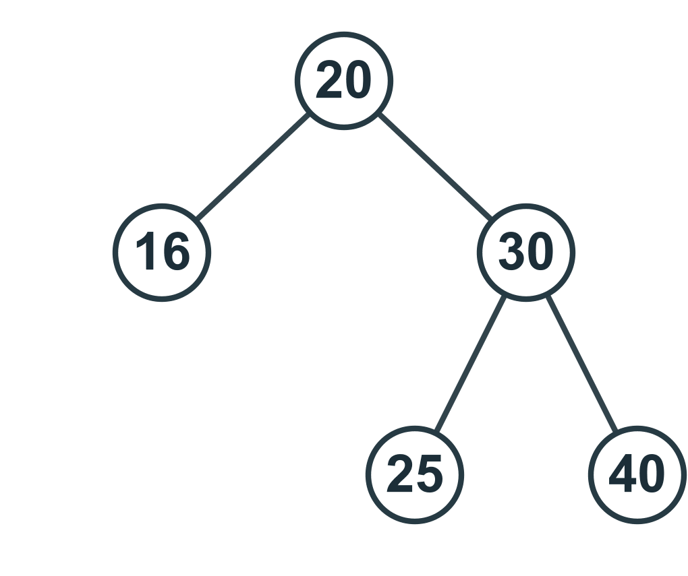
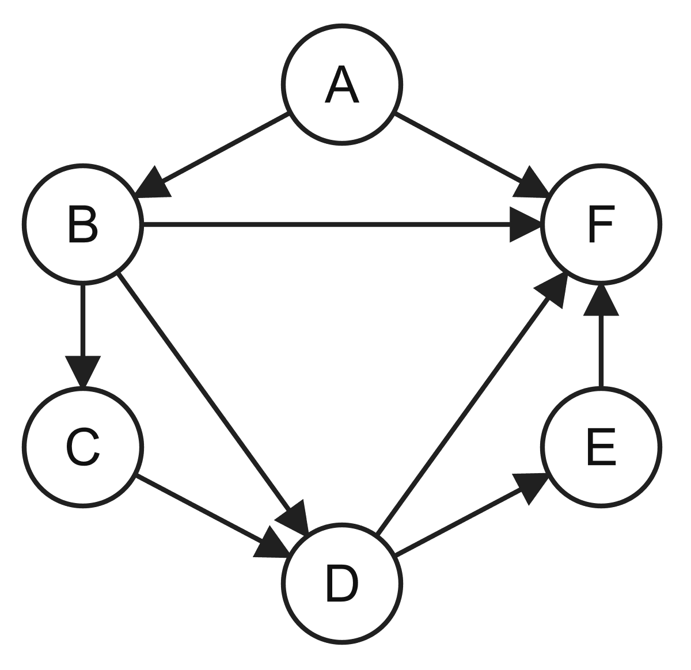
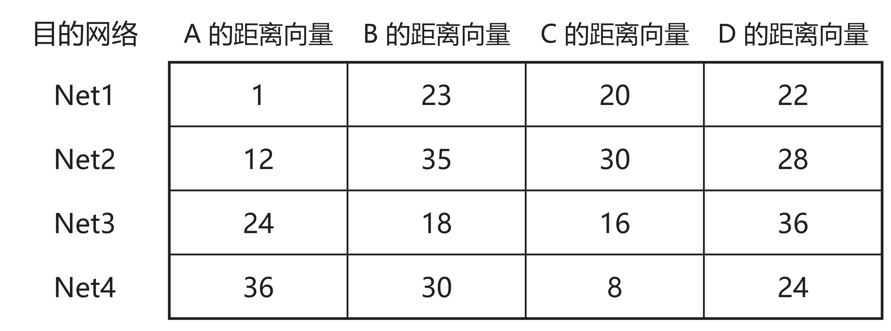
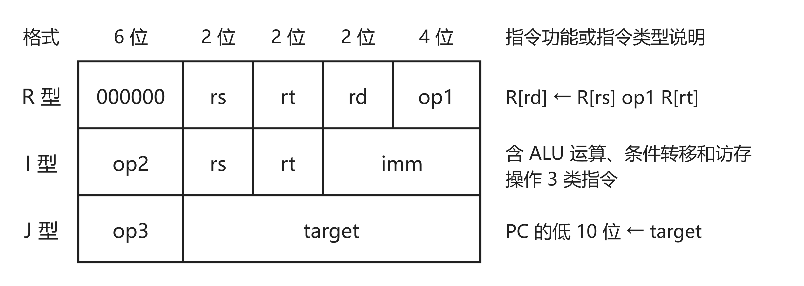

2021-01
线性表的链式表示已知头指针 h 指向一个带头结点的非空单循环链表，结点结构为
[data|next]
其中 next 是指向直接后继结点的指针，p 是尾指针，q 是临时指针。现要删除该链表的第一个元素，正确的语句序列是（ ）。
答案：D
本题讲解：带头结点单循环链表删除首元结点
答案：D。
第一步：明确删的是谁、删要做什么
h 是头指针，指向头结点；第一个元素存放在首元结点（即 h->next 所指结点）中。删除它需要三步：先用 q 保存待删结点的地址，再让前驱（头结点）的 next 越过它，最后 free(q) 释放——先保存再摘链，顺序不能反。
第二步：逐项排查
| 选项 | 做法与问题 |
|---|---|
| A | 先执行 h->next=h->next->next 再 q=h->next：q 拿到的是新首元（原第 2 个结点），free(q) 释放错结点，原首元直接丢失 |
| B | q=h->next; h->next=h->next->next; free(q); 删除动作本身对，但没维护尾指针 p：若链表只有 1 个元素结点，被删结点恰是尾结点，释放后 p 悬空 |
| C | if (p != q) p = h; 条件写反：正常情况（p≠q，尾结点好好在）反而把 p 改成 h，真正的尾结点失联 |
| D | if (p == q) p = h; 只有删除的恰是尾结点（链表仅 1 个元素）时才把 p 修正为 h，一般、特例都正确 |
第三步：为什么必须考虑 p==q
单循环链表的尾结点 next 指回头结点。删除首元结点并不影响尾结点——除非首元结点本身就是尾结点（链表只有 1 个元素）。此时删除后链表只剩头结点，p 必须改指 h，否则 p 悬空，后续操作全错。
易错点
- 选 B：只背"删除三步曲"，漏掉题目专门给出的尾指针 p 的维护。
- 选 C：把"删的是尾结点才修 p"写成"不是尾结点才修 p"。
- 先 free 后用：free 之前必须已改好 next，且用 q 保存过待删地址。
结论：q=h->next; h->next=q->next; if(p==q) p=h; free(q); —— 答案 D。2021-02
队列已知初始为空的队列 Q 的一端仅能进行入队操作，另外一端既能进行入队操作又能进行出队操作。若 Q 的入队序列是 1, 2, 3, 4, 5，则不能得到的出队序列是（ ）。
答案：D
本题讲解：输出受限双端队列的不可达出队序列
答案：D。
第一步：读懂队列结构
一端仅能入队，另一端可入可出：删除只发生在"可入可出"的一端（下称右端），插入可在左、右端任选，出队可以随时进行。入队顺序固定为 1,2,3,4,5。
第二步：解题策略
出队先后只由元素在队列中"左→右"的相对位置决定。判断"能得到"只需给出一组插入端选择；判断"不能得到"要找一个必要条件让它不成立。
第三步：A、B、C 都能构造出来
- A
5,4,3,1,2：1 右、2 左、3/4/5 右 → 队列（左→右）2,1,3,4,5，右端依次出 5,4,3,1,2。 - B
5,3,1,2,4：1 右、2 左、3 右、4 左、5 右 → 队列4,2,1,3,5，出 5,3,1,2,4。 - C
4,2,1,3,5：1 右、2 右、3 左、4 右、5 左 → 队列5,3,1,2,4，出 4,2,1,3,5。
第四步：D 的必要条件不成立
4 是第一个出队的，而 1、2、3 比 4 先入队且在 4 出队前不能出队，所以插入完 1,2,3 后队列必须排成 2,3,1（左→右），才能接着出 1、3、2。但按 1→2→3 的顺序向两端插入，可达排列只有 4 种：
| 插入端选择 | 队列（左→右） |
|---|---|
| 全插右端 | 1,2,3 |
| 全插左端 | 3,2,1 |
| 1 左、2 左、3 右 | 2,1,3 |
| 1 左、2 右、3 左 | 3,1,2 |
2,3,1 不在其中 → D 不能得到。
易错点
- 套用普通队列或栈：普通队列只有一种出队序列，栈只有一种逆序；本题是"删单端、插两端"，可达序列多得多。
- 只试不证：对"不能得到"的选项要落到可达排列的枚举上，而不是"没试出来"。
结论：出 4,1,3,2,5 需要队列先排成 2,3,1，两端插入排不出 → 答案 D。
2021-03
数组和特殊矩阵已知二维数组 A 按行优先方式存储，每个元素占用 1 个存储单元。若元素 A[0][0] 的存储地址是 100，A[3][3] 的存储地址是 220，则元素 A[5][5] 的存储地址是（ ）。
答案：B
本题讲解：行优先存储的地址计算
答案：B。
第一步：写出行优先地址公式
按行优先存储、每个元素占 1 个存储单元、每行 n 个元素、下标从 0 开始时，A[i][j] 之前存有 i 个整行（i×n 个元素）再加本行的 j 个：
| 元素 | 地址 |
|---|---|
| A[i][j] | LOC(A[0][0]) + i×n + j |
第二步：用 A[3][3] 反求列数 n
220 − 100 = 120 = 3n + 3 → n = 39。
第三步：代入求 A[5][5]
LOC(A[5][5]) = 100 + 5×39 + 5 = 100 + 200 = 300。
验算（从 A[3][3] 往后数）：LOC(A[5][5]) = 220 + 2n + 2 = 220 + 80 = 300 ✓。
易错点
- 公式没对齐：i、j 与 n 的位置写错，列数 n 估多或估少，会算出 295、306 这类干扰值。
- 差一错误：把首地址 100 当成"第 1 个单元"而不是"单元 0 的起始地址"，多加 1 得 301（干扰项 C）。
- 忘了验算：用
LOC(A[3][3]) + 2n + 2再算一遍，两条路结果一致才放心。
结论：n = 39，LOC(A[5][5]) = 100 + 5×39 + 5 = 300，答案 B。
2021-04
二叉树的遍历和线索二叉树树森林某森林 F 对应的二叉树为 T，若 T 的先序遍历序列是 a, b, d, c, e, g, f，中序遍历序列是 b, d, a, e, g, c, f，则 F 中树的棵数是（ ）。
答案：C
本题讲解：由遍历序列重建二叉树，数森林的棵数
答案：C。
第一步：先序定根、中序分左右，重建二叉树 T
先序 a,b,d,c,e,g,f；中序 b,d,a,e,g,c,f。
| 递归 | 先序段 | 中序段 | 根 | 左子树 | 右子树 |
|---|---|---|---|---|---|
| 整树 | a b d c e g f | b d a e g c f | a | {b,d} | {c,e,g,f} |
| a 的左 | b d | b d | b | {d} | 空 |
| a 的右 | c e g f | e g c f | c | {e,g} | {f} |
| c 的左 | e g | e g | e | 空 | {g} |
得到 T：a 的左孩子 b（b 的左孩子 d）；a 的右孩子 c；c 的左孩子 e（e 的右孩子 g）、右孩子 f。
第二步：用"森林 → 二叉树"规则数棵数
转换规则：二叉树的根 = 第一棵树的根；根的右孩子链上依次是第二棵、第三棵……树的根；每个树根的左子树来自它孩子森林的转换。所以树的棵数 = 根沿右链走到底经过的结点数：a → c → f，共 3 个 → 3 棵树。
第三步：还原验证
树 1：根 a（孩子 b，b 的孩子 d）；树 2：根 c（孩子 e、g）；树 3：根 f（无孩子）。三棵树共 7 个结点，与 T 的结点数一致。
易错点
- 数成左链或总结点数：棵数看根的右链长度（a→c→f 共 3 个），不是左链、也不是 7。
- 把 e 与 g 的关系弄错：中序 e 在 g 前、先序 e 也在 g 前，g 只能挂在 e 的右子树（对应原树中 g 是 e 的兄弟）。
- 不重建直接猜：先序 + 中序可唯一确定二叉树，必须逐层切分。
结论：右链 a→c→f 长 3，森林 F 有 3 棵树，答案 C。
2021-05
树与二叉树的应用若某二叉树有 5 个叶结点，其权值分别为 10, 12, 16, 21, 30，则其最小的带权路径长度（WPL）是（ ）。
答案：B
本题讲解：哈夫曼树求最小 WPL
答案：B。
第一步：明确方法与它的"为什么"
5 个叶结点权值 10, 12, 16, 21, 30。WPL = Σ(叶权值 × 叶到根的路径长度)，路径上每条边记 1。哈夫曼树的构造规则：每次从森林中取两个最小的权值合并，新权值放回森林，重复到只剩一棵树。
为什么专挑最小的两个合并？ 直观地看：越晚参与合并的结点，离根越近、路径越短；越早被合并的结点，被一层层"垫"在底下、路径越长。让权值小的叶走长路、权值大的叶走近路，总和才最小——这正是"贪心"能取到最小 WPL 的原因。
第二步：逐步合并
| 步 | 森林中权值 | 取出 | 合并 |
|---|---|---|---|
| 1 | 10,12,16,21,30 | 10,12 | 22 |
| 2 | 16,21,22,30 | 16,21 | 37 |
| 3 | 22,30,37 | 22,30 | 52 |
| 4 | 37,52 | 37,52 | 89 |
第三步：求 WPL
WPL = 所有非叶结点（合并结果）权值之和 = 22 + 37 + 52 + 89 = 200。
为什么非叶求和就等于 WPL？ 每次合并产生的新权值 = 它两棵子树中全部叶权值之和。一个叶权值每经过一次合并就被计入一次，而它从叶到根恰好经历深度次合并——所以 Σ(叶权值 × 叶深度) 与 Σ(各次合并值) 算的是同一个账，只是后者不用画树，更快且不易错。
（验算：画树后 10、12 各在深度 3，16、21、30 各在深度 2：10×3 + 12×3 + 16×2 + 21×2 + 30×2 = 30 + 36 + 32 + 42 + 60 = 200 ✓，两条路结果一致。）
易错点
- 选 A（89）：把最后一次合并值（树根权值）当成 WPL——WPL 是全部合并值之和。
- 每次没取最小两个：合并顺序错，WPL 会偏大，对应 208、289 这类干扰值。
- 重复使用已合并的权值：合并后小权值"消失"，只留新结点继续参战。
结论：WPL = 22 + 37 + 52 + 89 = 200，答案 B。
2021-06
树形查找给定平衡二叉树如下图所示，插入关键字 23 后，根中的关键字是（ ）。

答案：D
本题讲解：AVL 插入 23 与 RL 型双旋转
答案：D。
第一步：按 BST 规则插入 23
原树：根 20，左孩子 16，右孩子 30；30 的左孩子 25、右孩子 40。
23 > 20 → 右；23 < 30 → 左；23 < 25 → 左。23 作为 25 的左孩子 插入。
第二步：找最小失衡子树
从新结点向上查平衡因子：25 号 BF=+1、30 号 BF=+1，都平衡；根 20：左子树高 1、右子树高 3，BF=−2，失衡。最小失衡子树的根是 20。
第三步：判型并双旋
插入位置在 20 的右子树（30）的左子树（25）下 → RL 型。RL 型 = 先对右孩子 30 左旋，再对失衡点 20 右旋：
| 旋转 | 结果 |
|---|---|
| 对 30 左旋 | 25 升为该子树根，23、40 各归其位 |
| 对 20 右旋 | 25 成为新根：左孩子 20（带 16、23），右孩子 30（带 40） |
调整后各结点平衡因子绝对值 ≤ 1，树根关键字为 25。
易错点
- 选 C（23）：以为插入后根会变成新关键字，忽视失衡必须调整。
- 选 B（20）：只做了对 30 的左旋就停手，忘了 RL 型还要对 20 右旋。
- 判成 RR 型：插入落在 30 的左侧（25 的左孩子），是 RL 不是 RR；RR 才是单左旋。
结论：RL 型双旋后新根为 25，答案 D。
2021-07
图的应用给定如下有向图，该图的拓扑有序序列的个数是（ ）。

答案：A
本题讲解：拓扑有序序列个数的判断
答案：A。
第一步：列边与入度
图中有 6 个顶点，边为：A→B、A→F、B→C、B→D、B→F、C→D、D→E、D→F、E→F。
| 顶点 | A | B | C | D | E | F |
|---|---|---|---|---|---|---|
| 入度 | 0 | 1 | 1 | 2 | 1 | 4 |
第二步：模拟拓扑排序（每轮删一个入度为 0 的点）
- 初始只有 A 入度为 0 → 第 1 个必是 A。
- 删 A 后只有 B 入度为 0 → 第 2 个必是 B。
- 删 B 后只有 C 入度为 0（D 还剩来自 C 的入边）→ 第 3 个必是 C。
- 删 C 后只有 D 入度为 0 → 第 4 个必是 D；删 D 后 E、F 中只有 E 入度为 0 → 第 5 个必是 E；最后 F。
每一轮"入度为 0 的顶点"都唯一，没有任何可选择的分叉。
第三步：结论
拓扑序列只能是 A,B,C,D,E,F，个数 = 1。
易错点
- 凭直觉：看到 F 入度大就断定 F 最后——结论虽对，但必须靠逐步删点来推。
- 漏边 B→F 或 D→F：入度数错，中间步骤可能出现"并列"误判。
- 混淆对象：本题问的是序列个数，不是图的个数；逐轮删点验证即可。
结论：每轮入度为 0 的顶点都唯一，拓扑序列仅 A,B,C,D,E,F 一种，答案 A。
2021-08
图的应用使用 Dijkstra 算法求下图中从顶点 1 到其余各顶点的最短路径，将当前找到的从顶点 1 到顶点 2,3,4,5 的最短路径长度保存在数组 dist 中，求出第二条最短路径后，dist 中的内容更新为（ ）。

答案：C
本题讲解：Dijkstra 的 dist 数组更新
答案：C。
第一步：初始化
dist 初值取顶点 1 的直接边权：dist[2]=26，dist[3]=3，dist[4]=∞，dist[5]=6。
第二步：第一轮——确定第一条最短路径
未确定顶点中 dist 最小的是顶点 3（=3）→ 顶点 3 确定。用它松弛邻边：3→2 权 22，3+22=25 < 26 → dist[2] 更新为 25。此时 dist = 25, 3, ∞, 6。
第三步：第二轮——确定第二条最短路径
未确定顶点中 dist 最小的是顶点 5（=6）→ 顶点 5 确定（第二条最短路径求出）。用 5 松弛：
- 5→2 权 15：6+15=21 < 25 → dist[2]=21
- 5→4 权 8：6+8=14（原为 ∞）→ dist[4]=14
- 5→3 权 6：6+6=12 > 3，不变
第四步：读数组
dist[2..5] = 21, 3, 14, 6。
易错点
- 选 B（25,…）：只做完第一轮（确定顶点 3）就停——题问"第二条最短路径求出后"，要做满两轮。
- 选 A（26,…）：漏了用顶点 3 松弛 dist[2]。
- 选 D（15,…）：接着把第三轮（顶点 4 确定，14+1=15）也做了——多算一轮。
- 忘松弛：Dijkstra 每确定一个顶点，必须用它更新所有邻接顶点的 dist。
结论：确定顶点 3、5 并各自松弛后，dist = 21,3,14,6，答案 C。
2021-09
B树和B+树在一棵高度为 3 的 3 阶 B 树中，根为第 1 层，若第 2 层中有 4 个关键字，则该树的结点个数最多是（ ）。
答案：A
本题讲解：3 阶 B 树结点数的上限
答案：A。
第一步：3 阶 B 树的结构约束
m 阶 B 树中，每个结点最多 m 棵子树、m−1 个关键字，且子树数 = 关键字数 + 1。3 阶 → 每个结点最多 3 棵子树、2 个关键字。
第二步：第 2 层最多几个结点
根结点最多 3 棵子树 → 第 2 层最多 3 个结点。第 2 层共 4 个关键字，按"每结点 ≤ 2 个"分配成 2+1+1，正好装进 3 个结点（这是使总结点最多的摆法）。
第三步：第 3 层最多几个结点
子树数 = 关键字数 + 1 → 三个结点的子树数分别为 3、2、2，合计 7 棵 → 第 3 层最多 7 个结点。
第四步：合计
1（根）+ 3（第 2 层）+ 7（第 3 层）= 11 个结点。
易错点
- 选 D（8）：把"3 阶"理解成每结点最多 3 个关键字，约束用错。
- 选 C（9）：让第 2 层只放 2 个结点（各 2 关键字），得 1+2+6=9——那是其中一种形态；第 2 层摆 3 个结点（2+1+1）子树更多，才是上限。
- 忘"子树数 = 关键字数 + 1"：按 2+1+1 直接乘 3 得 9，是典型错误。
结论：1 + 3 + (3+2+2) = 11，答案 A。
2021-10
归并排序基数排序和计数排序设数组 S[] = {93, 946, 372, 9, 146, 151, 301, 485, 236, 327, 43, 892}，采用最低位优先（LSD）基数排序将 S 排列成升序序列。第 1 趟分配、收集后，元素 372 之前、之后紧邻的元素分别是（ ）。
答案：C
本题讲解：LSD 基数排序第 1 趟（按个位）
答案：C。
第一步：明确第 1 趟规则与两条"为什么"
最低位优先（LSD）从最低有效位（个位）开始：按个位数字把元素分入 0–9 号桶，桶内保持原序列的先后顺序（先到先排，不重排），再按 0→9 依次收集。
为什么桶内必须保持原序？ 这是稳定性在起作用：每一趟只按"本位"排大小，本位相同的元素谁先谁后要继承上一趟的顺序。若第一趟桶内乱排，下一趟按十位分桶时，同十位的元素之间的个位次序已经被打乱，个位信息就丢了——整套"逐位升级"的逻辑随即失效。
为什么从个位开始而不是最高位？ 个位是最小的权重，先按它排好，再靠后面每一趟稳定排序把它"带"上去：按十位排完后，十位相同的数自动保持个位升序，十位不同的数按十位升序——最低位到最高位每趟走完，整体就完全有序。反过来从最高位开始，低位相同的数还得回头调整，方向就错了。
第二步：按个位分配（d = 个位数字）
| 桶 | 元素（按原序） |
|---|---|
| 1 | 151, 301 |
| 2 | 372, 892 |
| 3 | 93, 43 |
| 5 | 485 |
| 6 | 946, 146, 236 |
| 7 | 327 |
| 9 | 9 |
（0、4、8 号桶为空。）
第三步：收集 0→9
151, 301, 372, 892, 93, 43, 485, 946, 146, 236, 327, 9
372 的前一个元素是 301，后一个是 892。
易错点
- 桶内排序：第 1 趟桶内不排序，只保持到达顺序；在桶内重排会得到别的相邻关系。
- 选 B（236,301）：那是原始序列里 372 的左右邻居，与第 1 趟收集后的邻居混淆。
- 从高位开始：MSD 才从最高位开始；LSD 第 1 趟必看个位。
结论：第 1 趟收集后 372 紧邻前 301、后 892，答案 C。
2021-11
选择排序将关键字 6,9,1,5,8,4,7 依次插入到初始为空的大根堆 H 中，得到的 H 是（ ）。
答案：B
本题讲解：大根堆的依次插入
答案：B。
第一步：插入规则
新元素先放到完全二叉树的下一个空位（数组尾部），再与双亲比较：比双亲大就上浮交换，直到不大于双亲或到达堆顶。按 1 起下标，i 的双亲是 ⌊i/2⌋。
第二步：逐个插入（数组按层序记录）
| 插入 | 数组（1..n） | 调整过程 |
|---|---|---|
| 6 | 6 | — |
| 9 | 9,6 | 9 > 父 6，上浮 |
| 1 | 9,6,1 | 1 < 父 6，不动 |
| 5 | 9,6,1,5 | 5 < 父 6（4 号的双亲是 2 号），不动 |
| 8 | 9,6,1,5,8 → 9,8,1,5,6 | 8 > 父 6 交换；8 < 父 9 停 |
| 4 | 9,8,1,5,6,4 → 9,8,4,5,6,1 | 4 > 父 1（6 号的双亲是 3 号）交换；4 < 父 8 停 |
| 7 | 9,8,4,5,6,1,7 → 9,8,7,5,6,1,4 | 7 > 父 4（7 号的双亲是 3 号）交换；7 < 父 9 停 |
第三步：读结果
最终堆的层序数组 = 9,8,7,5,6,1,4。
易错点
- 选 A（9,8,7,6,5,4,1）：把堆当成"层序递减的有序数组"——堆只保证双亲 ≥ 孩子，同层/异子树之间无大小约束。
- 选 C 或 D：上浮时交换对象弄错（如 8 与 9 比、4 的双亲找错下标）。
- 下标口径：双亲公式 ⌊i/2⌋ 基于从 1 开始的层序下标，从 0 开始会算错双亲。
结论：依次插入 6,9,1,5,8,4,7 后得到 9,8,7,5,6,1,4，答案 B。
2021-12
计算机的性能指标2017 年公布的全球超级计算机 TOP 500 排名中，我国“神威 · 太湖之光”超级计算机蝉联第一，其浮点运算速度为 93.0146 PFLOPS，说明该计算机每秒钟内完成的浮点操作次数约为（ ）。
答案：D
本题讲解：PFLOPS 的量级换算
答案：D（9.3 亿亿次）。
第一步：认清词头 P
FLOPS 的词头阶梯：K=10^3 → M=10^6 → G=10^9 → T=10^12 → P=10^15 → E=10^18。P（Peta）= 10 的 15 次方，中文说法是"千万亿"。
第二步：完成换算
93.0146 PFLOPS = 93.0146 × 10^15 次/秒 = 9.30146 × 10^16 ≈ 9.3 × 10^16 次/秒。而"亿"= 10^8，"亿亿"= 10^16，所以 9.3 × 10^16 就是 9.3 亿亿次，选 D。
易错点
- 把 P 当成 10 的 12 次方：10^12 是 T（Tera），对应选项 A 的 9.3×10^13（93 TFLOPS 量级，差了 3 个数量级）。
- 换算后忘了整理系数：9.3×10^15（选项 B）与 9.3 千万亿次（选项 C）其实是同一个数，都相当于把 93.0146 PFLOPS 看成了 9.3 PFLOPS，缩小了 10 倍。
记忆点：P = 10 的 15 次方（千万亿）；"亿亿" = 10 的 16 次方；93 P ≈ 9.3 × 10^16 = 9.3 亿亿次/秒。
2021-13
数制与编码已知带符号整数用补码表示，变量 x, y, z 的机器数分别为 FFFDH， FFDFH， 7FFCH，下列结论中，正确的是（ ）。
答案：D
本题讲解：同一位串的无符号读法与补码读法
答案：D（带符号时 y < x < z）。
第一步：无符号读法
把三个机器数直接按无符号解释：x = FFFDH = 65533，y = FFDFH = 65503，z = 7FFCH = 32764。大小顺序是 z < y < x——选项 A 说 z < x < y（需要 x < y，实际 x 更大）、选项 B 说 x < y < z，都不成立，排除 A、B。
第二步：补码读法
补码不是另一套数制，而是模运算下的记数方式：16 位共有 65536（2^16）个状态，把这个"状态环"从中间掰开——最高位为 0 的 0000H~7FFFH 表示 0 ~ +32767；最高位为 1 的 8000H~FFFFH 表示 −32768 ~ −1。所以判读就两句话：最高位为 1 → 负数；真值 = 无符号解释值 − 2^16。
为什么"减 2^16"是合法的？ 因为补码的定义就是同余：位串 FFFDH 之所以代表 −3，是因为 −3 ≡ 65533 (mod 65536)。位串本身没有符号，"最高位为 1"恰是"这个余数对应负真值"的记号，从余数还原真值，减一次模即可。（用"取反加一"验算：FFFDH 取反加一得 0003H = 3 → 真值 −3，与减模一致。）
| 变量 | 机器数 | 最高位 | 真值 |
|---|---|---|---|
| x | FFFDH | 1 | FFFDH − 10000H = −3 |
| y | FFDFH | 1 | FFDFH − 10000H = −33 |
| z | 7FFCH | 0 | 正数 32764 |
顺序为 y(−33) < x(−3) < z(32764)，选 D；选项 C 说 x < y < z，第一步就错在 −3 < −33 不成立。
易错点
- 无符号读法记反 x 与 y：FFFDH 比 FFDFH 大 30（1EH），所以无符号时 x > y，A、B 两个顺序都对不上。
- 求负数真值时算错：FFDFH 取反加一得 0021H = 33，故 y = −33；用"机器数 − 10000H"验算结果一致。
- 忘了先看最高位：z 的最高位是 0111 开头，是正数，不需要变换。
口诀：最高位 0，无符号与补码同值；最高位 1，真值 = 机器数 − 2^16。同一串位，两种读法，顺序不同。
2021-14
浮点数的表示与运算下列数值中，不能用 IEEE 754 浮点格式精确表示的是（ ）。
答案：A
本题讲解：IEEE 754 能精确表示哪些十进制数
答案：A（1.2 不能精确表示）。
第一步：判断标准
IEEE 754 的尾数是有限位的二进制小数，所以一个数能被精确表示，当且仅当它能写成有限位二进制小数。判别方法：把小数部分反复乘 2 取整，看是否能在有限步内归零；或写成最简分数，看分母是否只含因子 2。
第二步：逐个检验
| 数 | 最简分数 | 二进制 | 能否精确 |
|---|---|---|---|
| 1.25 | 5/4 | 1.01B | 能 |
| 2.0 | 2 | 10B | 能 |
| 2.5 | 5/2 | 10.1B | 能 |
| 1.2 | 6/5 | 1.001100110011…B | 不能，无限循环 |
1.2 = 6/5，分母含因子 5。用乘 2 法看小数部分 0.2：0.2→0.4→0.8→1.6→1.2→0.4… 进入循环，二进制无限循环，尾数位数有限时只能舍入成近似值。
易错点
- 以为小数位数少就能精确表示：1.2 只有 1 位十进制小数，但二进制下无限循环；1.25 有 2 位小数却恰好是 1.01B。
- 只检查整数部分：四个选项的整数部分都能精确表示，差异全在小数部分。
记忆点：分数分母只含因子 2（如 4、2）→ 精确；分母含 5、3 等其他因子 → 二进制无限循环，IEEE 754 只能近似。
2021-15
主存储器与CPU的连接某计算机的存储器总线中有 24 位地址线和 32 位数据线，按字编址，字长为 32 位。如果 00 0000H～3F FFFFH 为 RAM 区，那么需要 512K×8 位的 RAM 芯片数为（ ）。
答案：C
本题讲解：按字编址时的 RAM 区容量与芯片数
答案：C（32 片）。
第一步：RAM 区有多少个地址
地址区 00 0000H ～ 3F FFFFH，地址个数 = 3FFFFFH − 000000H + 1 = 400000H = 4M 个地址。按字编址，一个地址对应一个字，所以 RAM 区共 4M 个字。
第二步：换算容量
字长 32 位 = 4 B，总容量 = 4M 字 × 4 B/字 = 16 MB。
第三步：算芯片数
每片 512K × 8 位 = 512 KB：
- 字方向（扩容量）：4M 字 ÷ 512K 字/片 = 8 组；
- 位方向（凑位宽）：32 位数据线 ÷ 8 位/片 = 4 片并联成一组；
- 总数 = 8 × 4 = 32 片，选 C。
易错点
- 漏乘字长（选 A，8 片）：把 4M 个地址直接当 4MB —— 按字编址时每个地址对应 4 字节，容量要 × 4。
- 字长口径混乱（选 B 或 D）：把字长误当 16 位，位向只并 2 片或容量算成 4M × 2B，得到 16 片 / 64 片这类错误数。
- 只做位扩展：忘了字方向还要扩容，或只做字扩展忘了 32 位数据线需要 4 片并联。
容量账：4M 字 × 4 B/字 = 16 MB ÷ 512 KB/片 = 32 片；字向 8 组 × 位向 4 片。
2021-16
高速缓冲存储器若计算机主存地址为 32 位，按字节编址，Cache 数据区大小为 32KB，主存块大小为 32B，采用直接映射方式和回写（Write Back）策略，则 Cache 行的位数至少是（ ）。
答案：A
本题讲解：直接映射 Cache 行的位数
答案：A（275 位）。
第一步：划分主存地址
主存地址 32 位、按字节编址；主存块 32 B → 块内地址 5 位；Cache 数据区 32 KB ÷ 32 B/行 = 1024 行 → 行号（直接映射的组号）10 位；标记 Tag = 32 − 10 − 5 = 17 位。
第二步：拼装一行的位数
| 组成 | 位数 |
|---|---|
| 数据区：32 B × 8 | 256 |
| 标记 Tag | 17 |
| 有效位（valid，必须有） | 1 |
| 脏位（dirty，回写法必须有） | 1 |
| 合计 | 275 |
直接映射也需要 Tag 来区分"这行现在装的是主存哪一块"；采用回写（Write Back）策略时块被改后不立即写回主存，必须用脏位记录"已改、待写回"，所以 1 位脏位不能省。合计 256 + 17 + 1 + 1 = 275 位，选 A。
易错点
- 漏掉脏位（选 B，274）：写直达（Write Through）法确实不需要脏位，但本题是回写法。
- 丢掉 Tag（选 C 258 / D 257）：只算数据 + 有效位 + 脏位，忘了 17 位标记；C、D 正是 256 + 1 + 1 与 256 + 1。
- 行数算错：32 KB ÷ 32 B = 1024 行，行号是 10 位；若误算行数，Tag 就错了。
行位数 = 数据位数 + Tag + 有效位 + 脏位 = 256 + 17 + 1 + 1 = 275。
2021-17
CPU的功能和基本结构下列寄存器中，汇编语言程序员可见的是（ ）。
Ⅰ. 指令寄存器 Ⅱ. 微指令寄存器 Ⅲ. 基址寄存器 Ⅳ. 标志/状态寄存器
答案：D
本题讲解：哪些寄存器对汇编程序员可见
答案：D（仅Ⅲ、Ⅳ）。
第一步：判断标准
"汇编程序员可见"指程序员能通过指令访问它，或它的内容会影响程序执行结果。CPU 内部为取指、访存、微程序控制服务的寄存器，程序员既写不了也读不了，就是"不可见（透明）"的。
第二步：逐项判断
- Ⅰ 指令寄存器 IR：存放当前正在执行的指令，由取指部件自动装入，没有任何指令能读写它 → 不可见。
- Ⅱ 微指令寄存器：微程序控制器内部的部件，存放微指令，属于 CPU 的实现细节，对程序员完全透明 → 不可见。
- Ⅲ 基址寄存器：基址寻址中 EA = 基址 + 偏移量，汇编指令里直接引用它（如 8086 的 BX），虽常由操作系统设置，但寄存器本身对程序员可见 → 可见。
- Ⅳ 标志/状态寄存器：条件转移指令要测试零、进位、溢出等标志位，直接影响程序走向 → 可见。
仅Ⅲ、Ⅳ可见，选 D。
易错点
- 把基址寄存器当不可见：基址寻址由操作系统管理不等于寄存器不可见——指令中引用的寄存器都可见；错选 A、B、C 多半栽在这里。
- 把 IR 当可见：程序员不能指定 IR 的内容，它是自动装入的。
- 忘了标志寄存器：没有标志位，条件转移就无法实现。
可见：通用寄存器、PC（转移指令改变它）、基址/变址寄存器、标志寄存器；不可见：IR、MAR、MDR、微指令寄存器等 CPU 内部工作寄存器。
2021-18
数据通路的功能和基本结构下列关于数据通路的叙述中，错误的是（ ）。
答案：C
本题讲解：数据通路的组成与控制
答案：C（"不包含异常检测电路"说法错误）。
第一步：数据通路是什么
数据通路是数据在 CPU 各部件之间流动的路径与部件集合，既包括组合逻辑（操作）元件——ALU、多路选择器、加法器等，输出只由当前输入决定；也包括时序逻辑（状态）元件——通用寄存器、PC、IR 等有时钟控制的存储单元。
第二步：逐项核对
- A 对：ALU 是典型的组合逻辑操作元件，属于数据通路。
- B 对：寄存器是典型的时序逻辑状态元件，属于数据通路。
- C 错：数据通路包含用于异常事件检测及响应的电路，如溢出判断、除零检测等；检测结果再交给控制逻辑转成异常（内中断）处理。"不包含"与事实相反。
- D 对：数据走哪条路径由控制信号（多路选择器选择端、寄存器写使能等）控制。
易错点
- 以为异常检测电路归控制器管、不属于数据通路：溢出判断电路就放在运算通路里，它先"检出"，控制器再"响应"。
- 把控制信号和数据通路割裂：通路提供路径与部件，控制信号决定当拍数据怎么流，两者配合才构成完整 CPU 数据通路。
数据通路 = 组合逻辑元件 + 时序状态元件 + 异常检测电路；流动方向由控制信号指挥。
2021-19
总线概述总线事务和定时下列关于总线的叙述中，错误的是（ ）。
答案：C
本题讲解：总线定时方式与突发传送
答案：C（"一次握手完成一位数据交换"说法错误）。
第一步：正确说法的依据
- A 对：总线是连接多个部件的公共传输介质，可在两个或多个部件之间分时交换信息。
- B 对：同步总线用统一时钟信号定时；但时钟频率与总线工作频率不是一回事——工作频率可由时钟分频/倍频得到，二者不一定相等。
- D 对：突发（Burst）传送只需给出一个首地址，之后连续传送多个数据，省去重复的地址事务，适合成块传输。
第二步：C 错在哪
异步总线确实靠握手信号（请求—应答）定时，但一次握手对应的是一次完整的数据传送（一个字或一块数据），而不是"一位数据"。若每传一位都要握手，开销大到无法接受；实际总线按字/块为单位交换。
易错点
- 把"握手定时"夸大成"逐位握手"：握手的对象是整次总线事务的数据阶段，不是单个比特。
- 以为时钟频率 = 工作频率：总线常在时钟的分工下工作，两者可以不同。
- 不懂突发传送：突发 = 一次地址 + 多个连续数据。
同步看时钟，异步看握手；握手管的是"一次数据传送"，突发是一个地址连传多个数据。
2021-20
I/O接口下列选项中，不属于 I/O 接口的是（ ）。
答案：A
本题讲解：谁是 I/O 接口，谁是 I/O 设备
答案：A（磁盘驱动器不属于 I/O 接口）。
第一步：概念界定
I/O 接口是主机与外设之间的交接界面，负责速度匹配、信号电平/格式转换，内部有数据、状态、控制寄存器供 CPU 访问；I/O 设备（外设）是信息输入输出的实体本身。"适配器""控制器"通常指接口；"驱动器"指设备本体。
第二步：逐项判断
- 磁盘驱动器：磁盘存储设备的本体（盘片 + 磁头 + 驱动机构），是外设；它通过磁盘接口/控制器与主机相连 → 不是接口，当选 A。
- 打印机适配器："适配器"即接口卡，是主机与打印机之间的接口 → 属于。
- 网络控制器（网卡）：主机与网络的接口部件 → 属于。
- 可编程中断控制器（如 8259A）：管理外设中断请求的接口芯片，CPU 通过总线访问它 → 属于。
易错点
- 把"驱动器"当接口：驱动器是设备本体，执行真正的读写动作；它要借助接口才能与主机交换信息。
- 以为中断控制器是 CPU 内部部件：可编程中断控制器是独立于 CPU 的接口芯片，对 CPU 来说是一个可编程 I/O 接口。
判断标准：直接面对物理介质、执行动作的是"设备"；插在主机一侧做信息交接的是"接口"。
2021-21
异常和中断机制异常事件在当前指令执行过程中进行检测，中断请求则在当前指令执行后进行检测。下列事件中，相应处理程序执行后，必须回到当前指令重新执行的是（ ）。
答案：B
本题讲解：哪种事件处理后要重新执行当前指令
答案：B（页缺失）。
第一步：事件分类与检测时机
- 异常（内中断）：由指令本身引起，在当前指令执行过程中检测——系统调用（陷入 trap）、缺页（故障 fault）等。
- 中断（外中断）：来自外设，在每条指令执行后检测——DMA 传送结束、打印机缺纸等。
第二步：处理完返回哪里
| 事件 | 类型 | 处理完的返回位置 |
|---|---|---|
| 系统调用 | 陷入（trap） | 下一条指令 |
| 页缺失 | 故障（fault） | 当前指令重新执行 |
| DMA 传送结束 | 中断 | 下一条指令 |
| 打印机缺纸 | 中断 | 下一条指令 |
关键：缺页发生时，那条访存指令还没完成——处理程序把所需页面调入主存后，必须回到产生缺页的当前指令重新执行，这次访存才能真正完成。这正是"故障（fault）"类事件的标志。
易错点
- 以为所有异常都返回下一条指令：陷入类（trap，如系统调用）返回下一条；故障类（fault，如缺页）重执行当前指令；终止类（abort）甚至不返回。
- 把 DMA 结束当成要重执行：DMA 结束只是通知 CPU"传输完成"，与当前指令无关，属外中断，处理完继续往下走。
- 混淆检测时机：系统调用在指令执行中（执行"自陷指令"时）进入，中断在指令执行后检测。
记忆点：缺页 = 故障 = "这条访存指令还没做完" → 调页后必须回到当前指令重新执行。
2021-22
异常和中断机制I/O方式下列是关于多重中断系统中CPU响应中断的叙述，其中错误的是（ ）。
答案：A
本题讲解：多重中断系统的中断响应条件
答案：A（A 的说法错误）。
第一步：逐项核对
- A 错："仅在用户态下 CPU 才能检测和响应中断"与事实相反。CPU 执行内核程序（内核线程、中断处理程序本身）时，只要开中断且请求未被屏蔽，同样能检测并响应中断。响应中断的必要条件是"有请求 + 未屏蔽 + 开中断"，与处于用户态还是内核态无关。
- B 对：CPU 只有在（指令周期末）检测到中断请求信号后，才会进入中断响应周期（发中断隐指令）。
- C 对：进入中断响应周期的前提是 CPU 处于中断允许（开中断）状态；关中断期间请求被搁置。
- D 对：CPU 能检测到的请求，一定是通过了屏蔽检查的——被屏蔽的中断源的请求信号会被挡住，传不到 CPU；所以检测到请求就必有未被屏蔽的中断源在请求。
第二步：为什么 A 是错的
多重中断系统的设计中，中断处理程序本身可以在适当位置开中断，以便响应更高优先级的请求——此时 CPU 正处于内核态。可见"用户态"既不是必要条件也不充分，A 的表述把条件完全弄错了。
易错点
- 把"用户态才响应中断"当成常识：每条指令执行末 CPU 都检测中断，与特权级无关；关中断（临界区、中断处理程序内未开中断时）才不响应。
- 混淆"请求存在"与"请求被检测到"：被屏蔽的请求存在但被挡住，检测不到。
- 以为开中断与响应周期无关：不开中断，检测到请求也不会进入中断响应周期。
响应三条件：有请求信号、未被屏蔽、CPU 开中断——都与用户态/内核态无关。
2021-23
操作系统的运行环境下列指令中，只能在内核态执行的是（ ）。
答案：B
本题讲解：哪些指令只能在内核态执行
答案：B。 只有 I/O 指令属于特权指令，只能在内核态执行；trap、设置断点、数据传送这三类指令用户态都能执行。
第一步：抓住特权指令的判据
判断一条指令是否特权，不看它"是否少见"，而看它一旦被用户程序滥用，会不会破坏系统或侵犯其他进程。凡直接操纵硬件设备、影响系统全局状态的指令（I/O 指令、开/关中断、置时钟、清内存等）都必须收归内核态，用户态执行会被硬件拒绝。
第二步：逐项检验四个选项
| 选项 | 指令 | 用户态能否执行 |
|---|---|---|
| A | trap 指令 | 能，它的作用正是主动陷入内核态 |
| B | I/O 指令 | 不能，是特权指令 |
| C | 数据传送指令 | 能，寄存器与内存间搬数据 |
| D | 设置断点指令 | 能，调试用，断点陷入由系统接管 |
A（trap 指令）：即访管/陷入指令，用户程序靠它发起系统调用、从用户态进入内核态，它本身就是用户态可执行的指令。C（数据传送指令）：普通指令，用户程序的每条语句都在用。D（设置断点指令）：用于程序调试，断点处的陷入处理由系统接管，但"下断点"这条指令用户态就能执行。B（I/O 指令）：直接驱动设备，若用户态可用，任何程序都能绕过操作系统随意读写设备、破坏系统，故只能在内核态执行。
易错点
- 把 trap 当特权指令：trap 是"进入内核的门"，门槛本身在门外，选 A 正中陷阱。
- 把设置断点指令当特权指令：断点中断的处理程序在内核态，但设置断点的指令用户态可用。
- 误以为普通指令也要保护：数据传送指令只动用户自己的数据，不威胁系统全局。
记忆锚点：I/O、开/关中断、置时钟、清内存这类"碰硬件、动全局"的指令都是特权指令。
2021-24
进程与线程简介下列操作中，操作系统在创建新进程时，必须完成的是（ ）。
Ⅰ. 申请空白的进程控制块
Ⅱ. 初始化进程控制块
Ⅲ. 设置进程状态为执行态
答案：B
本题讲解：创建新进程必须完成的操作
答案：B。 操作系统创建新进程时，必须完成 Ⅰ（申请空白 PCB）和 Ⅱ（初始化 PCB）；Ⅲ（设置状态为执行态）不是必须的。
第一步：回顾创建原语的流程
操作系统创建进程用的是 Create 原语，标准步骤为：
- 申请一个空白的 PCB（进程控制块）
- 为新进程分配资源（内存空间等）
- 初始化 PCB（填入标识符、初始状态等信息）
- 将新进程插入就绪队列等待调度
第二步：逐条核对题中三个操作
- Ⅰ. 申请空白的进程控制块：PCB 是进程存在的唯一标志，没有 PCB 就没有进程，这是创建的第一步，必须完成。
- Ⅱ. 初始化进程控制块：申请到的空白 PCB 必须填入进程标识符、初始状态等内容后才有意义，必须完成。
- Ⅲ. 设置进程状态为执行态：错。刚创建的进程只能被置为就绪态并插入就绪队列，能否上 CPU 运行要由进程调度程序决定，创建过程无权直接让它进入执行态。
易错点
- 以为"创建完就去执行"：进程不是创建即运行，执行态只能由调度程序授予，这正是 Ⅲ 的陷阱所在。
- 忽略 PCB 的地位：创建、撤销、切换等一切进程操作都围绕 PCB 进行，Ⅰ 是必选项中的必选项。
记忆锚点：创建进程 = 申请空白 PCB → 分配资源 → 初始化 PCB → 进就绪队列（就绪态，不是执行态）。
2021-25
CPU调度下列内核的数据结构或程序中，分时系统实现时间片轮转调度需要使用的是（ ）。
Ⅰ. 进程控制块
Ⅱ. 时钟中断处理程序
Ⅲ. 进程就绪队列
Ⅳ. 进程阻塞队列
答案：C
本题讲解：时间片轮转调度需要哪些内核构件
答案：C。 分时系统实现时间片轮转（RR）调度需要 Ⅰ 进程控制块、Ⅱ 时钟中断处理程序、Ⅲ 进程就绪队列；不需要 Ⅳ 进程阻塞队列。
第一步：还原 RR 的一次完整周转
- 进程上 CPU 前，调度程序从就绪队列的队头挑选进程，这依赖就绪队列（Ⅲ）和记录进程状态、剩余时间片等信息的PCB（Ⅰ）。
- 时间片用完这个"事件"本身是由硬件时钟发出中断、再由时钟中断处理程序（Ⅱ）处理的：暂停当前进程，把它送到就绪队列队尾，再调度下一个进程上 CPU。
- 没有时钟中断，RR 就退化成"一直运行到结束为止"，轮转根本无从谈起。
第二步：为什么不需要阻塞队列
阻塞队列的用途是：进程因等待 I/O、信号量等事件而阻塞时挂到相应事件的等待队列上，事件发生后由唤醒方把它移回就绪队列。这套机制服务于"进程阻塞与唤醒"，与"时间片轮转"这一调度策略的实现无关——即使系统改用先来先服务调度，阻塞队列照样存在。故 Ⅳ 不是 RR 必需的构件。
易错点
- 看到队列就想要：Ⅳ 也是队列，顺手选上就中了选项 D 的陷阱；判断标准是"RR 调度机制本身是否依赖它"，不是"系统里有没有它"。
- 漏掉时钟中断：时间片"用完"这个事件就是时钟中断发出来的，漏掉 Ⅱ 会错选 A。
记忆锚点：RR = PCB 记状态 + 时钟中断掐表 + 就绪队列排队轮转，三者缺一不可。
2021-26
磁盘和固态硬盘某系统中磁盘的磁道数为200（0～199），磁头当前在184号磁道上。用户进程提出的磁盘访问请求对应的磁道号依次为184，187，176，182，199。若采用最短寻道时间优先调度算法（SSTF）完成磁盘访问，则磁头移动的距离（磁道数）是（ ）。
答案：C
本题讲解：SSTF 磁盘调度求磁头移动总道数
答案：C（41 个磁道）。 最短寻道时间优先（SSTF）每次都选择"离当前磁头最近"的请求服务，逐次累加移动距离即可。
第一步：列出每次选择的比较过程
磁头起点 184，请求序列 184，187，176，182，199：
| 步骤 | 当前位置 | 各请求距当前位置 | 选中 | 移动道数 |
|---|---|---|---|---|
| 1 | 184 | 184 距 0 | 184 | 0 |
| 2 | 184 | 182 距 2，187 距 3，176 距 8，199 距 15 | 182 | 2 |
| 3 | 182 | 187 距 5，176 距 6 | 187 | 5 |
| 4 | 187 | 176 距 11，199 距 12 | 176 | 11 |
| 5 | 176 | 只剩 199 | 199 | 23 |
第二步：合计
总移动距离 = 0 + 2 + 5 + 11 + 23 = 41（磁道），服务顺序为 184 → 182 → 187 → 176 → 199。
易错点
- 漏掉与磁头同道的请求 184：它距离为 0、最先被服务，漏掉它起点就乱了。
- 惯性单向扫描：SSTF 不像 SCAN 那样沿一个方向扫到底；182 之后应就近折返去 187、176，而不是继续冲向大号磁道。
- 182 与 187 比错：从 184 出发，182 距离 2 比 187 距离 3 更近，先取 182 是本题最易错的一步。
记忆锚点：SSTF = 每步在剩余请求中选最近者，累加绝对距离；磁头会就近来回摆动。
2021-27
CPU调度下列事件中，可能引起进程调度程序执行的是（ ）。
Ⅰ. 中断处理结束
Ⅱ. 进程阻塞
Ⅲ. 进程执行结束
Ⅳ. 进程的时间片用完
答案：D
本题讲解：哪些事件可能引发进程调度
答案：D（Ⅰ、Ⅱ、Ⅲ、Ⅳ 都可能）。 只要 CPU 的占用关系发生变化，调度程序就可能被触发执行。
第一步：逐项判断
- Ⅰ. 中断处理结束：可能。时钟中断处理完发现时间片用完，或 I/O 中断处理完唤醒了优先级更高的进程，都会引发调度。
- Ⅱ. 进程阻塞：可能。进程因等待 I/O 等事件主动放弃 CPU，CPU 空出来了，必须由调度程序另选进程上 CPU。
- Ⅲ. 进程执行结束：可能。进程正常终止并释放 CPU，同样需要调度程序安排新进程。
- Ⅳ. 时间片用完：可能。时间片轮转系统中时间片一到，当前进程被剥夺 CPU 送回就绪队列队尾，触发调度。
第二步：归纳触发时机
四件事的共同点是 CPU 的占用关系变了：要么 CPU 空出（进程阻塞、进程执行结束），要么该换人了（时间片用完、中断处理结束后出现更合适的候选）。这正是进程调度程序工作的时机。注意题目问的是"可能引起"，只要存在这种可能即算，故四项全选。
易错点
- 漏选 Ⅰ（中断处理结束）：以为中断处理与调度无关；实际上时钟中断正是时间片机制的来源，I/O 中断还会唤醒进程、改变调度决策。
- 只选 Ⅱ、Ⅳ：忽略进程执行结束也会让出 CPU（正中选项 B 的陷阱）。
记忆锚点：引发调度的两类时机——CPU 空了（阻塞、结束）与该让位了（时间片用完、中断处理结束后权衡）。
2021-28
虚拟内存管理某请求分页存储系统的页大小为4KB，按字节编址。系统给进程P分配2个固定的页框，并采用改进型Clock置换算法，进程P页表的部分内容如下表所示。
| 页号 | 页框号 | 存在位 1：存在 0：不存在 | 访问位 1：访问 0：未访问 | 修改位 1：修改 0：未修改 |
|---|---|---|---|---|
| … | … | … | … | … |
| 2 | 20H | 0 | 0 | 0 |
| 3 | 60H | 1 | 1 | 0 |
| 4 | 80H | 1 | 1 | 1 |
| … | … | … | … | … |
若 P 访问虚拟地址为 02A01H 的存储单元，则经地址变换后得到的物理地址是（ ）。
答案：C
本题讲解：请求分页地址变换与改进型 Clock 置换
答案：C（60A01H）。 完整链路是：拆地址 → 查页表发现缺页 → 改进型 Clock 选牺牲页 → 装入后重新变换。
第一步：拆分虚拟地址
页大小 4KB = 1000H，按字节编址，页内偏移占低 12 位（3 位十六进制）。虚拟地址 02A01H 拆成：页号 = 02H，页内偏移 = A01H。
第二步：查页表，发现缺页
页 2 的存在位为 0，说明页 2 不在内存，访问它产生缺页中断（选项 B 的 20A01H 正是拿页框号 20H 拼出来的陷阱——不在内存的页没有有效页框号）。缺页处理必须从 2 个固定页框中换出一页，当前占用者是：页 3（帧 60H，A=1，M=0）、页 4（帧 80H，A=1，M=1）。
第三步：改进型 Clock 选牺牲页
规则：第一轮找 (A=0, M=0)；第二轮找 (A=0, M=1)，扫过时把访问位 A 清 0；仍找不到就重复第一轮。
| 轮次 | 找什么 | 页 3 (A,M) | 页 4 (A,M) | 结果 |
|---|---|---|---|---|
| 第一轮 | (0,0) | (1,0) | (1,1) | 落空 |
| 第二轮 | (0,1) | (1,0) 不符，清 A 变 (0,0) | (1,1) 不符，清 A 变 (0,1) | 落空 |
| 第三轮 | (0,0) | (0,0) 命中 | — | 换出页 3 |
第四步：装入并重新变换
页 2 装入页 3 腾出的页框 60H，页表更新后重新变换：物理地址 = 页框号 60H 与偏移 A01H 拼接 = 60A01H。
易错点
- 直接拿 20H 拼 B：页 2 存在位为 0，根本不在内存，页框号 20H 无效。
- 忽略"扫描清 A"：不把 A 清 0，第三轮就找不到 (0,0)，改进型 Clock 的流程就走不下去。
- 忘了重新变换：缺页处理后要用新页框号 60H 拼同一个偏移 A01H，而不是停在"缺页"。
记忆锚点：请求分页先查存在位；缺页按 (0,0) → (0,1)（扫过清 A）→ 再 (0,0) 选牺牲页；物理地址 = 新页框号拼原偏移。
2021-29
内存管理概念在采用二级页表的分页系统中，CPU页表基址寄存器中的内容是（ ）。
答案：B
本题讲解：二级页表下页表基址寄存器的内容
答案：B。 CPU 页表基址寄存器中存放的是当前进程一级页表的起始物理地址。
第一步：定位基址寄存器在地址变换中的角色
二级页表的变换起点是：MMU 拿虚拟地址的高位部分去查一级页表，从表项中得到二级页表的位置，再查二级页表得到页框号，最后拼出物理地址。一级页表是整条查表链的入口——入口自己不能再依赖别的表来定位，所以基址寄存器必须直接指向一级页表（不是二级页表，排除 C、D）。
第二步：为什么必须是物理地址
页表存放在内存中，MMU 访问内存用的必须是物理地址。若寄存器里放的是一级页表的虚拟地址，用它之前还得先做一次地址变换，而这次变换又要依赖基址寄存器本身，形成"鸡生蛋"的死循环。因此该寄存器是硬件直接使用的，只能放物理地址（排除 A）。
第三步：二级页表的地址放在哪
一级页表的表项里存放二级页表的起始物理地址（页框号）。每个进程有自己的页表，进程切换时基址寄存器随之换成新进程一级页表的物理地址。
易错点
- 选 D（二级页表的起始物理地址）：二级页表成千上万张，寄存器放不下也用不着；二级页表的地址记在一级页表项里。
- 选 A 或 C（虚拟地址）：基址寄存器是硬件查询的起点，放虚拟地址会造成循环变换。
- 忘了"当前进程"：寄存器内容随进程切换而更换，存的是当前进程一级页表的基址。
记忆锚点：基址寄存器 = 查表链条的入口 = 一级页表 + 物理地址；二级页表的地址在一级页表项中。
2021-30
文件系统基础若目录dir下有文件file1，则为删除该文件内核不必完成的工作是（ ）。
答案：A
本题讲解：删除文件时内核做什么、不做什么
答案：A。 删除目录 dir 下的文件 file1，内核不必完成"删除 file1 的快捷方式"。
第一步：列出删除文件的内核动作
删除一个文件，内核的标准动作是：
- 在目录 dir 中找到并删除 file1 对应的目录项（即选项 D）；
- 释放 file1 的文件控制块 FCB（索引结点）（即选项 B）；
- 回收 file1 占用的磁盘空间，包括数据块和索引块（即选项 C）。
B、C、D 都是删除文件必须完成的工作。
第二步：分析选项 A
快捷方式（符号链接）是另一个独立的文件/目录项，其中保存的是指向 file1 的路径信息。删除 file1 时：
- 内核的删除动作只作用于 file1 自身的目录项、FCB 和磁盘空间；
- 指向它的快捷方式并不会被联动删除（之后访问该链接才会发现目标失效）；若把"删快捷方式"当成删除 file1 的必要步骤，反而违背了链接机制的语义。
所以"删除 file1 的快捷方式"不是内核删除文件必须完成的工作，选 A。
易错点
- 以为快捷方式会被联动删除：符号链接与目标文件是两个独立条目，删除目标不影响链接文件本身。
- 把"释放磁盘空间"漏掉：只删目录项是"假删除"，真正的删除必须释放 FCB 并回收磁盘块，否则空间泄漏。
记忆锚点：删除文件三件套——删目录项、释放 FCB、回收磁盘块；快捷方式不在其列。
2021-31
死锁若系统中有n（n≥2）个进程，每个进程均需要使用某类临界资源2个，则系统不会发生死锁所需的该类资源总数至少是（ ）。
答案：C
本题讲解：保证不死锁的最少资源数
答案：C（n+1）。 n（n≥2）个进程、每个需要 2 个同类临界资源时，不死锁所需的最少资源总数是 n+1。
第一步：构造最坏情形，说明 n 个不够
最坏的分配是让每个进程都"各拿 1 个、还差 1 个"：n 个资源全部发了出去，每个进程都持有 1 个并在等待第 2 个，谁也无法前进——这正是死锁。所以 n 个资源不安全。
第二步：验证 n+1 个一定够
资源总数为 n+1 时，无论怎么分，最坏也只是"每进程各占 1 个"之后还剩 1 个。这剩下的 1 个必然能分给某个进程，使它凑齐 2 个而运行完毕；它结束后释放自己占用的 2 个资源，其余进程又能依次凑齐、完成。系统任何时刻都不会陷入"全体互相等待"，故不会发生死锁。
第三步：记住公式
不死锁所需最少资源数 = Σ(每个进程的最大需求量 − 1) + 1。本题每个进程最大需求都是 2，代入得 n × (2 − 1) + 1 = n + 1。
易错点
- 选 B（n）：只算"平均每人 1 个"，忽略了"每人都卡在还差 1 个"的死锁形态。
- 选 D（2n）：那是"每进程都能一次拿满"的充分条件，但题目问的是"至少"，不是最少够用的量。
- 特例验证：n = 2 时，2 个资源可能死锁（各拿 1 个互等），3 个资源一定安全，代入即可排除 A、B。
记忆锚点：最坏情形是"人人都差一个"；再多给 1 个就必有一个进程能跑完并释放资源——最少 = n+1。
2021-32
操作系统的运行环境下列选项中，通过系统调用完成的操作是（ ）。
答案：C
本题讲解：哪些操作通过系统调用完成
答案：C。 创建新进程通过系统调用完成；页置换、进程调度由内核自动执行，生成随机整数通常由用户态库函数完成。
第一步：给出系统调用的判据
系统调用的本质：用户程序主动请求、且必须由内核代劳的服务。用户程序通过访管指令（trap）陷入内核态，内核完成操作后返回用户态。判据两条缺一不可：用户主动发起 + 内核才能完成。
第二步：逐项检验
- A（页置换）：内存不足或缺页时由内核自动启动置换，不是用户程序"申请"的服务，不经系统调用。
- B（进程调度）：调度程序按调度时机（时间片用完、进程阻塞、进程结束等）由内核自动执行，用户进程既无法也无需"调用"它。
- C（创建新进程）：用户程序调用 fork() 等接口，经 trap 陷入内核，由进程创建原语完成，是标准系统调用。
- D（生成随机整数）：可由用户态函数库实现，通常不必进内核，不是系统调用。
易错点
- 以为"内核做的事都算系统调用"：页置换、进程调度确实是内核做的，但那是内核自主行为，没有"用户主动请求"这个入口，不走系统调用通道。
- 把库函数当系统调用：rand() 这类纯用户态库函数并不陷入内核。
记忆锚点：系统调用 = 用户主动发起 + 内核代劳（进程控制、文件操作、设备操作、信息维护四大类）；内核自动行为与用户态库函数都不算。
2021-33
计算机网络体系结构与参考模型在TCP/IP参考模型中，由传输层相邻的下一层实现的主要功能是（ ）。
答案：B
本题讲解：TCP/IP 模型中传输层的下一层及其功能
结论
答案：B（路由选择）。与传输层相邻的下一层是网际层，路由选择正是网际层的主要功能。
第一步：先定位"下一层"是哪层
TCP/IP 四层自上而下：应用层 → 传输层 → 网际层 → 网络接口层。与传输层相邻的下一层就是网际层（IP 层），所以本题实际在问：网际层的主要功能是什么。
第二步：逐项辨析功能归属
- A 对话管理：建立、同步、终止"对话"是 OSI 会话层的职责，TCP/IP 模型中根本没有会话层 → 排除。
- B 路由选择：网际层负责把 IP 数据报从源主机跨多个网络送到目的主机，为每个数据报选择路径（路由选择）是它的核心功能 → 正确。
- C 端到端报文段传输："报文段"是传输层的协议数据单元，端到端进程之间的数据传送是传输层自己的功能，不是下一层的 → 排除。
- D 结点到结点流量控制："结点到结点"（相邻结点之间）的流量控制属于数据链路层（网络接口层）的功能；端到端的流量控制才属于传输层 → 排除。
易错点
- 把路由选择当成传输层功能：传输层只关心端到端（进程到进程）的传输，报文走哪条路径是网际层的事。
- 混淆两类流量控制：题干故意把"端到端"换成"结点到结点"，一字之差就从传输层掉到链路层。
- 误以为 TCP/IP 有会话层：对话管理在 TCP/IP 四层模型中没有归属层。
一句话：传输层的下一层是网际层——管寻址与路由选择；报文段是传输层的，帧与结点到结点控制是网络接口层的。
2021-34
通信基础若下图为一段差分曼彻斯特编码信号波形，则其编码的二进制位串是（ ）。

答案：A
本题讲解：差分曼彻斯特编码波形还原位串
结论
答案：A（1011 1001）。差分曼彻斯特编码看每个码元开始处有无电平跳变：有跳变记 0，无跳变记 1；每个码元中间必有一次跳变，只用于同步。
第一步：明确解码规则
- 码元开始处有跳变 → 该位记 0；
- 码元开始处无跳变 → 该位记 1；
- 中间跳变每个码元都有，不参与判定；
- 第 1 位以信号初始电平（图中开始处为高电平）作参考。
第二步：逐位判定
| 位 | 1 | 2 | 3 | 4 | 5 | 6 | 7 | 8 |
|---|---|---|---|---|---|---|---|---|
| 开始处电平变化 | 高→高 | 低→高 | 低→低 | 高→高 | 低→低 | 高→低 | 高→低 | 高→高 |
| 有无跳变 | 无 | 有 | 无 | 无 | 无 | 有 | 有 | 无 |
| 判定值 | 1 | 0 | 1 | 1 | 1 | 0 | 0 | 1 |
得位串 1011 1001，即选项 A。
易错点
- 与曼彻斯特编码混淆：曼彻斯特每个码元开始处都有跳变，靠电平本身定 0/1；差分曼彻斯特靠"开始处有没有跳变"定 0/1。
- 漏掉第 1 位的参考电平：位 1 要与信号初始电平比较——图中初始为高，位 1 开始处无跳变，故记 1。
- 把中间跳变当判定依据：中间跳变人人都有，只负责同步，判定只看码元开始处。
一句话：差分曼彻斯特 = 开始处"有跳变记 0、无跳变记 1"，中间跳变只管同步。
2021-35
IPv4现将一个IP网络划分为3个子网，若其中一个子网是192.168.9.128/26，则下列网络中，不可能是另外两个子网之一的是（ ）。
答案：B
本题讲解：子网划分的完整性检验
结论
答案：B（192.168.9.0/26）。取 B 作子网后，剩余地址被切成两块互不相邻的地址块，最后一个子网名额无法同时覆盖，故 B 不可能。
第一步：锁定已知子网
已知一个子网是 192.168.9.128/26，覆盖 192.168.9.128 ~ 191。三个子网必须不重不漏地覆盖整个原网络，据此逐项检验。
第二步：逐项检验
- A 192.168.9.0/25（0~127）：再补一个 192.168.9.192/26（192~255），三块
0/25 + 128/26 + 192/26恰好拼满 192.168.9.0/24 → 可能。 - C 192.168.9.192/26（192~255）：与 128/26 拼成 128~255，再补 192.168.9.0/25 → 拼满 → 可能。
- D 192.168.9.192/27（192~223）：原网络不必是 /24，可取更小的 192.168.9.128/25（128~255），三块
128/26 + 192/27 + 224/27拼满 → 可能。 - B 192.168.9.0/26（0~63）：无论原网络取多大，取走 0~63 后剩余空间至少包含
64~127与192~255两块地址，中间隔着已占用的 128~191；子网是连续的地址块，只剩一个名额，盖不住两块"孤岛" → 不可能。
第三步：为什么 D 可以而 B 不可以
D 只占 192~223，原网络可以"缩小"为 192.168.9.128/25 来适配；而 B 一旦取走 0~63，剩余空间必然同时出现 64~127 与 192~255 两个孤岛，任何单个连续子网都无法同时覆盖。
易错点
- 默认原网络一定是 /24：题目没说原网络多大，D 正是靠把原网络取成 /25 才成立。
- 只查"不重叠"、忘了"不漏"：三个子网必须恰好覆盖整个网络，B 的错误正出在"漏"上。
- 误以为子网可以是离散地址：子网是一个连续的 CIDR 地址块。
一句话：候选子网 + 已知子网 + 最后一个子网 = 完整覆盖原网络；剩下两块孤岛就出局。
2021-36
IPv4若路由器向MTU=800B的链路转发一个总长度为1580B的IP数据报（首部长度为20B）时，进行了分片，且每个分片尽可能大，则第2个分片的总长度字段和MF标志位的值分别是（ ）。
答案：B
本题讲解：IP 数据报分片的字段计算
结论
答案：B（796, 1）。第 2 个分片的总长度字段为 796，MF 标志位为 1。
第一步：算出数据总量与每片上限
总长度 1580 B、首部 20 B → 数据部分 = 1580 − 20 = 1560 B。
MTU = 800 B → 每片"总长度"不能超过 800，即每片数据 ≤ 800 − 20 = 780 B。
关键约束：除最后一个分片外，每片数据长度必须是 8 B 的整数倍（片偏移以 8 B 为单位）。780 ÷ 8 = 97.5，故每片数据最多取 97 × 8 = 776 B。
第二步：依次切片
| 分片 | 数据长度 | 总长度（20+数据） | MF | 片偏移（数据字节起点÷8） |
|---|---|---|---|---|
| 第 1 片 | 776 B | 796 B | 1 | 0 |
| 第 2 片 | 776 B | 796 B | 1 | 97 |
| 第 3 片 | 8 B | 28 B | 0 | 194 |
切走 776 B 后剩 1560 − 776 = 784 B，仍超过 776，所以第 2 片仍装 776 B；最后剩 784 − 776 = 8 B 给第 3 片。
第三步：读出第 2 片的字段
第 2 片总长度 = 20 + 776 = 796；它后面还有第 3 片 → MF = 1（MF=1 表示"后面还有分片"）。
易错点
- 每片数据取 780 B：忽略了"除最后一片外数据长必须是 8 的倍数"，780 不是 8 的倍数。
- 总长度字段填 800：800 是 MTU 上限，每片总长度 = 首部 + 数据，第 2 片装 776 B 数据时总长只有 796。
- MF 填 0：第 2 片后面还有第 3 片，必须为 1；只有最后一片的 MF 才是 0。
一句话：每片数据 = 776 B（8 的倍数且 ≤ MTU−20），第 2 片总长 796、MF = 1。
2021-37
路由算法与路由协议某网络中的所有路由器均采用距离向量路由算法计算路由。若路由器E与邻居路由器A,B,C和D之间的直接链路距离分别是8，10，12和6，且E收到邻居路由器的距离向量如下表所示，则路由器E更新后的到达目的网络Net1～Net4的距离分别是（ ）。

答案：D
本题讲解：距离向量路由算法的路由更新
结论
答案：D（9, 20, 28, 20）。更新公式：E 到某目的网络的新距离 = min{ 直达距离(E→X) + 邻居 X 报告的到该网络的距离 }，X 取遍 A、B、C、D。
第一步：列已知量
E 与四个邻居的直达距离：A = 8，B = 10，C = 12，D = 6。邻居发来的距离向量见题表。
第二步：逐个目的网络取最小
| 目的网络 | 经A：8+A | 经B：10+B | 经C：12+C | 经D：6+D | 更新后 |
|---|---|---|---|---|---|
| Net1 | 8+1=9 | 10+23=33 | 12+20=32 | 6+22=28 | 9（经A） |
| Net2 | 8+12=20 | 10+35=45 | 12+30=42 | 6+28=34 | 20（经A） |
| Net3 | 8+24=32 | 10+18=28 | 12+16=28 | 6+36=42 | 28（经B或C） |
| Net4 | 8+36=44 | 10+30=40 | 12+8=20 | 6+24=30 | 20（经C） |
第三步：读结果
E 更新后到 Net1~Net4 的距离 = 9, 20, 28, 20，选 D。Net3 经 B 和经 C 都是 28，选哪个邻居都一样，距离值相同。
易错点
- 直接抄邻居向量：得到 9, 23, 20, 22 之类——忘记加上 E 到邻居的直达距离。
- 只用直达距离：得到 9, 10, 12, 6（选项 A）——忘记邻居报告的向量可能更优。
- 对 Net3 犹豫不决：两个 28 任取即可，题目只问距离值，不问下一跳。
一句话：新距离 = min(直达距离 + 邻居向量)，四个邻居各算一遍取最小。
2021-38
TCP若客户首先向服务器发送FIN段请求断开TCP连接，则当客户收到服务器发送的FIN段并向服务器发送了ACK段后，客户的TCP状态转换为（ ）。
答案：B
本题讲解：TCP 连接释放时客户的状态迁移
结论
答案：B（TIME_WAIT）。客户（主动关闭方）收到服务器的 FIN 段并发回 ACK 后，进入 TIME_WAIT 状态。
第一步：分清主动方与被动方
客户首先发送 FIN 请求断开 → 客户是主动关闭方，服务器是被动关闭方。两方的状态序列不同，选项 A 就是被动方专属状态。
第二步：客户侧状态链
| 事件 | 客户进入的状态 |
|---|---|
| 发出 FIN | FIN_WAIT_1 |
| 收到服务器的 ACK | FIN_WAIT_2 |
| 收到服务器的 FIN，回送 ACK | TIME_WAIT |
| 等待 2MSL 超时 | CLOSED |
题设"收到服务器发送的 FIN 段并向服务器发送了 ACK 段"恰好对应第三行 → TIME_WAIT。
第三步：逐项核对
- A CLOSE_WAIT：被动方（服务器）收到客户 FIN 并回 ACK 后进入的状态，客户不会进入 → 错。
- C FIN_WAIT_1：客户刚发出 FIN、尚未收到任何回应时的状态 → 错。
- D FIN_WAIT_2：客户收到 ACK 但尚未收到对方 FIN 时的状态（半关闭，服务器仍可发数据）→ 错。
- B TIME_WAIT：收完对方 FIN、回完最后一个 ACK 后进入，停留 2MSL → 对。
易错点
- 背反状态归属：CLOSE_WAIT、LAST_ACK 只属于被动关闭方；FIN_WAIT_1、FIN_WAIT_2、TIME_WAIT 只属于主动关闭方。
- 把 TIME_WAIT 记成服务器状态：TIME_WAIT 总出现在主动关闭方一侧。
- 忽略 2MSL：TIME_WAIT 等待 2MSL 才 CLOSED，保证最后的 ACK 丢失可重传、本连接的旧报文自然消亡。
一句话：主动方一条链 FIN_WAIT_1 → FIN_WAIT_2 → TIME_WAIT（2MSL）→ CLOSED；收完 FIN 回完 ACK 就进 TIME_WAIT。
2021-39
UDPTCP若大小为12B的应用层数据分别通过1个UDP数据报和1个TCP段传输，则该UDP数据报和TCP段实现的有效载荷（应用层数据）最大传输效率分别是（ ）。
答案：D
本题讲解：UDP 与 TCP 的最大传输效率
结论
答案：D（60.0%, 37.5%）。UDP 数据报的传输效率为 60.0%，TCP 段的最大传输效率为 37.5%。
第一步：明确"最大传输效率"怎么算
传输效率 = 应用层数据 ÷ 协议总长度。要效率最大，首部一律取最小值；且本题只算 UDP 数据报、TCP 段本身，不计 IP 及以下各层的开销。应用层数据都是 12 B。
第二步：分别计算
- UDP：首部固定
8 B→ 数据报总长 =12 + 8 = 20 B→ 效率 =12 ÷ 20 = 60.0%。 - TCP：首部 20~60 B 可变，求最大效率取最小
20 B→ 段总长 =12 + 20 = 32 B→ 效率 =12 ÷ 32 = 37.5%。
第三步：核对干扰项来源
16.7%=12 ÷ 72：误用 TCP 的 60 B 最大首部（选项 A、C 里的错值）。- 选项 B 把 UDP 首部当成 20 B，得出 37.5%——UDP 首部固定只有 8 B。
- 把 UDP、TCP 两列算反，就会错选 A。
易错点
- TCP 首部取 60 B：求"最大效率"必须用最小首部 20 B。
- UDP 首部记成 20 B：UDP 首部固定 8 B（伪首部只在计算校验和时临时拼入，不计入数据报长度）。
- 算上 IP 首部：题目问的是 UDP 数据报、TCP 段自身的效率，不含 IP 开销。
一句话：UDP = 12/20 = 60%，TCP = 12/32 = 37.5%（首部取最小 20 B）。
2021-40
TCP设主机甲通过TCP向主机乙发送数据，部分过程如下图所示。甲在t₀时刻发送一个序号seq=501，封装200B数据的段，在t₁时刻收到乙发送的序号seq=601、确认序号ack_seq=501，接收窗口rcvwnd=500B的段，则甲在未收到新的确认段之前，可以继续向乙发送的数据序号范围是（ ）。

答案：C
本题讲解：TCP 发送窗口与可发送序号范围
结论
答案：C（701～1000）。发送窗口 = 501~1000，扣除已发送未确认的 501~700，可继续发送的新数据序号 = 701~1000。
第一步：记下已占用的序号
甲在 t0 发出 seq=501、封装 200 B 数据的段 → 占用序号 501 ~ 700。
第二步：读懂乙回的段
ack_seq = 501：确认号 = 期望收到的第一个字节的序号，说明 501 号字节还没收到 → 刚才那 200 B 尚未被确认。rcvwnd = 500：乙的接收窗口还能容纳 500 B → 甲的发送窗口（此题由接收窗口决定）从 501 起共 500 B，即501 ~ 1000。- 段里的
seq = 601是乙自己发送数据的序号，与甲的窗口毫无关系，纯属干扰。
第三步：窗口内扣除已发送部分
窗口 501~1000 中，501~700 已发送未确认；"可以继续发送"的是窗口内尚未发送的部分 → 701 ~ 1000。
易错点
- 选 A（501～1000）：忘记扣除已发送未确认的 200 B。
- 选 B/D（601～1100 / 801～1100）：被乙的 seq=601 带偏，把窗口起点算到"已发送数据的末尾再往后"。
- 把确认号理解成"已收到 700"：ack_seq=501 恰恰说明 501~700 一个字节都还没确认。
一句话：窗口 = [ack_seq, ack_seq + rcvwnd) = 501~1000；再减去已发未确认的 501~700 → 可发 701~1000。
2021-41
图的基本概念图的存储及基本操作算法和算法评价已知无向连通图G由顶点集V和边集E组成，|E|>0，当G中度为奇数的顶点个数为不大于2的偶数时，G存在包含所有边且长度为|E|的路径（称为EL路径）。设图G采用邻接矩阵存储，类型定义如下：
typedef struct {
int numVertices, numEdges; // 图的定义
char VerticesList[MAXV]; // 顶点表。MAXV为已定义常量
int Edge[MAXV][MAXV]; // 邻接矩阵
} MGraph;请设计算法 int IsExistEL(MGraph G)，判断 G 是否存在 EL 路径，若存在，则返回1，否则返回0。要求：
1）给出算法的基本设计思想。
2）根据设计思想，采用 C 或 C++语言描述算法，关键之处给出注释。
3）说明你所设计算法的时间复杂度和空间复杂度。
（1）基本设计思想：统计图中度数为奇数的顶点个数。若该个数为0或2，则存在包含所有边且长度为|E|的路径（即欧拉路径），返回1；否则返回0。
（2）算法描述（C/C++语言）：
int IsExistEL(MGraph G) {
int degree, i, j, count = 0;
for (i = 0; i < G.numVertices; i++) {
degree = 0; // 初始化记录度的变量
for (j = 0; j < G.numVertices; j++) {
degree = degree + G.Edge[i][j]; // 记录各点的度
}
if (degree % 2 != 0)
count++; // 度为奇数的顶点计数
}
if (count == 0 || count == 2) // 度为奇数的点数量是0或2
return 1;
else
return 0;
}（3）时间复杂度：O(n²)，其中n为顶点数（numVertices）。空间复杂度：O(1)，仅使用常数额外空间。
本题讲解：判断无向图是否存在 EL 路径（欧拉路径）
第 0 步：先立机制——为什么"奇度顶点 0 或 2 个"就能一笔画
把 EL 路径想成一笔画：沿路径每经过一个顶点一次，就从它身上用掉两条边（一进一出），只有起点和终点例外——各有一条边只用了"一半"。于是路径中间的顶点必须全是偶度，允许奇度的只有起点、终点这两个位置：
- 奇度顶点 0 个：起点与终点重合，路径闭合成欧拉回路——它同样包含所有边且长度为 |E|，也是一条 EL 路径；
- 奇度顶点 2 个：这两个奇度点正好一个当起点、一个当终点，EL 路径从其中一点画到另一点。
为什么奇度顶点不可能是 1 个、3 个？ 所有顶点度数之和 = 2|E|（每条边给两个端点各贡献 1 度），必为偶数；偶度顶点贡献偶数，所以"度数总和的奇偶性 = 奇度顶点个数的奇偶性"，奇度顶点永远有偶数个。"不大于 2 的偶数"就只剩 0 和 2 两个候选——这正是题目条件的来历。
题目已给定"无向连通图、|E|>0"，连通性不必再查，判定只剩一件事：数出奇度顶点的个数。
第 1）问：基本设计思想
机制落到邻接矩阵上：无向图的邻接矩阵对称，每条与顶点 i 相连的边都在第 i 行贡献一个 1（图无自环，对角线不用单独处理），所以顶点 i 的度 = 第 i 行元素之和。逐行求度，用 count 累计奇度顶点个数：count 为 0 或 2 → 返回 1，否则返回 0。
第 2）问：算法实现（与参考答案同口径）
int IsExistEL(MGraph G) 的骨架：
- 外层
for (i = 0; i < G.numVertices; i++)：内层先把degree清零，再for (j = 0; j < G.numVertices; j++) degree += G.Edge[i][j]; if (degree % 2 != 0) count++;—— 奇度顶点计数。- 循环结束后
if (count == 0 || count == 2) return 1; else return 0;
关键注释点：degree 初始化清零、奇度判断、count==0 || count==2 的最终判定。
第 3）问：复杂度
双重循环把矩阵的 n² 个元素每个看一次，与实际边数无关——邻接矩阵的开销由"矩阵多大"决定，不由"边有多少"决定，时间复杂度 O(n²)（n 为 numVertices）。辅助变量只有 degree、count、i、j 常数个，输入矩阵本身不算额外空间，空间复杂度 O(1)。
易错点
- 漏掉"0 也算存在"：奇度顶点为 0 时是欧拉回路，首尾相接、同样包含所有边且长度为 |E|，条件必须写成
count==0 || count==2。 - 度数统计不完整：无向图邻接矩阵对称，整行求和即可；只加一半会数错。
- 复杂度写成 O(n+e)：那是邻接表的口径——邻接表只存实际边才与 e 有关；邻接矩阵必须扫全表。
- 忘记初始化：degree 每行开始前必须清零，否则会累加到上一个顶点的度上。
记忆锚点：一笔画只允许起点终点各"欠"一条边 → 奇度顶点 0 或 2 个；矩阵第 i 行行和 = 顶点 i 的度；扫全矩阵 = O(n²) 时间、O(1) 空间。
2021-42
排序的基本概念归并排序基数排序和计数排序算法和算法评价已知某排序算法如下：
void cmpCountSort(int a[],int b[],int n)
{ int i,j,*count;
count=(int *)malloc(sizeof(int)*n); //C++语言：count=new int[n];
for(i=0;i<n;i++) count[i]=0;
for(i=0;i<n-1;i++)
for(j=i+1;j<n;j++)
if(a[i]<a[j]) count[j]++;
else count[i]++;
for(i=0;i<n;i++) b[count[i]]= a[i];
free(count); //C++语言：delete count;
}请回答下列问题。
1）若有 int a[] = {25,-10,25,10,11,19},b[6];，则调用 cmpCountSort(a,b,6) 后数组 b 中的内容是什么？
2）若 a 中含有 n 个元素，则算法执行过程中，元素之间的比较次数是多少？
3）该算法是稳定的吗？若是，则阐述理由；否则，修改为稳定排序算法。
1） 调用 cmpCountSort(a, b, 6) 后，数组 b 的内容为 {-10, 10, 11, 19, 25, 25}。
2） 算法执行过程中，元素之间的比较次数为 n(n-1)/2。
3） 该算法不是稳定的。
理由：原数组中相同的元素（如两个 25）在排序后相对顺序发生了改变（第一个 25 出现在第二个 25 之后）。
修改为稳定排序算法的方法：在比较 a[i] 和 a[j] 时，当两者相等时，应根据下标 i 和 j 的大小来决定增加 count[i] 还是 count[j]。例如，可修改比较逻辑为：
if (a[i] < a[j] || (a[i] == a[j] && i < j))
count[j]++;
else
count[i]++;本题讲解：cmpCountSort 计数排序变体
第 1）问：数组 b 的内容
代码对每对 (i, j)（i 从 0 到 n−2，j 从 i+1 到 n−1）比较一次：a[i] < a[j] 则 count[j]++，否则 count[i]++——每对恰让"较大者（相等时算靠前者）"的计数加 1。于是 count[k] = 小于 a[k] 的元素个数 + 排在 k 之后的相等元素个数，正是 a[k] 在 b 中的归位下标。
对 a = {25, −10, 25, 10, 11, 19} 逐对累加得 count = [5, 0, 4, 1, 2, 3]，再按 b[count[i]] = a[i] 归位：
| i | a[i] | count[i] | 归位 |
|---|---|---|---|
| 0 | 25 | 5 | b[5]=25（先出现的 25） |
| 1 | −10 | 0 | b[0]=−10 |
| 2 | 25 | 4 | b[4]=25（后出现的 25） |
| 3 | 10 | 1 | b[1]=10 |
| 4 | 11 | 2 | b[2]=11 |
| 5 | 19 | 3 | b[3]=19 |
所以 b = {−10, 10, 11, 19, 25, 25}。
第 2）问：比较次数
i 从 0 到 n−2，j 从 i+1 到 n−1，每对元素之间恰比较一次，共 n(n−1)/2 次（n=6 时 15 次）。
第 3）问：稳定性
不稳定。两个 25：先出现的 a[0] 因"多算了与它相等的后者"拿到 count=5，去了 b[5]；后出现的 a[2] 拿 count=4，去了 b[4]——相同元素的相对次序颠倒。
修改为稳定：相等时把计数加给靠后的那个，使先出现的排在前面：
if (a[i] < a[j] || (a[i] == a[j] && i < j)) count[j]++; else count[i]++;
这样先出现的 25 得 count=4 排在 b[4]，后出现的得 5 排在 b[5]，次序保持。
易错点
- 想当然填 b：相等元素的计数归属必须按代码逐对推（本题两处 25 的 count 是 5 和 4，不是 4 和 5）。
- 比较次数写成 n² 或 n(n+1)/2：内层从 i+1 开始，只算无序对。
- 误判为稳定：盯着两个 25 的 count 与归位下标看，才能发现次序颠倒。
一句话：每对比较一次、计数给"大者"，归位即升序；相等时计数给了靠前者，故不稳定——把相等情形的计数改给靠后者即稳定。
2021-43
数制与编码运算方法和运算电路指令系统指令的寻址方式CPU的功能和基本结构假定计算机 M 字长为 16 位，按字节编址，连接 CPU 和主存的系统总线中地址线为 20 位、数据线为 8 位，采用 16 位定长指令字，指令格式及其说明如下：

其中，op1～op3 为操作码，rs、rt 和 rd 为通用寄存器编号，R[r] 表示寄存器 r 的内容，imm 为立即数，target 为转移目标的形式地址。请回答下列问题。
1）ALU 的宽度是多少位？可寻址主存空间大小为多少字节？指令寄存器、主存地址寄存器（MAR）和主存数据寄存器（MDR）分别应有多少位？
2）R 型格式最多可定义多少种操作？I 型和 J 型格式总共最多可定义多少种操作？通用寄存器最多有多少个？
3）假定 op1 为 0010 和 0011 时，分别表示带符号整数减法和带符号整数乘法指令，则指令 01B2H 的功能是什么（参考上述指令功能说明的格式进行描述）？若 1、2、3 号通用寄存器当前内容分别为 B052H、0008H、0020H，则分别执行指令 01B2H 和 01B3H 后，3 号通用寄存器内容各是什么？各自结果是否溢出？
4）若采用 I 型格式的访存指令中 imm（偏移量）为带符号整数，则地址计算时应对 imm 进行零扩展还是符号扩展？
5）无条件转移指令可以采用上述哪种指令格式？
（1）ALU 宽度为 16 位；可寻址主存空间为 220 B，即 1 MB；IR 为 16 位，MAR 为 20 位，MDR 为 8 位。
（2）R 型格式最多定义 16 种操作；I 型和 J 型格式总共最多定义 63 种操作；通用寄存器最多 4 个。
（3）
01B2H：R[3] ← R[1] - R[2]，执行后R[3]=B04AH，不溢出；01B3H：R[3] ← R[1] × R[2]，执行后R[3]=8290H，溢出。
（4）对 imm 进行符号扩展。
（5）采用 J 型格式。
本题讲解：16 位定长指令的位数分配、译码与带符号运算
第 0 步：先立机制——每个部件的位数由"它一次要装下什么"决定
位数题不要背结论，先问"这个东西一次必须完整装下/送出什么"：
- ALU：一次对两个操作数完成一次运算，操作数是一个字 → ALU 宽度 = 字长 = 16 位；
- IR：一条指令必须一口气取进 IR 才能译码 → IR = 指令字长。定长指令字 16 位 → 16 位；
- MAR：地址沿地址线一位一位送出，MAR 的每一位都要有对应的地址线 → MAR = 地址线条数 = 20 位；
- MDR：数据沿数据线搬运，数据线只有 8 位，一次总线事务只能搬 1 字节 → MDR = 数据线条数 = 8 位。
（为什么 16 位指令装得进 8 位 MDR？分两次：先取高字节经 MDR 转存 IR，再取低字节——这正是"按字节编址 + 8 位数据线"的机器取一条指令的真实过程。）
可寻址空间同理：20 位地址线能给出 2^20 个不同地址，按字节编址 → 2^20 B = 1 MB。空间由地址线根数决定，与字长无关。
第 1）问：答案
ALU 16 位；可寻址主存 2^20 B = 1 MB；IR 16 位、MAR 20 位、MDR 8 位。
第 2）问：编码空间账
三种格式共享前 6 位这个公共字段：CPU 取来指令先看前 6 位——是 000000 就按 R 型处理，真正的操作编码藏在其后的 op1 里；否则这 6 位就是操作码（在 I 型里叫 op2、在 J 型里叫 op3，是同一个字段的两个名字，不会同时出现）。
- R 型：op1 有 4 位 → 最多 2^4 = 16 种操作；
- I 型 + J 型：共用 6 位编码共 64 个码点，其中
000000已被 R 型征用 → 64 − 1 = 63 种； - rs/rt/rd 各 2 位，编号最多编出 2^2 = 4 个 → 通用寄存器最多 4 个。
第 3）问：拆指令、做运算、判溢出
01B2H = 0000 0001 1011 0010。前 6 位 = 000000 → R 型，按位段拆开：
| 位段 | 编码 | 含义 |
|---|---|---|
| rs | 01 | 1 号寄存器 |
| rt | 10 | 2 号寄存器 |
| rd | 11 | 3 号寄存器 |
| op1 | 0010 | 带符号整数减法 |
功能：R[3] ← R[1] − R[2]。01B3H 与它只差最低位，op1 = 0011 → 乘法：R[3] ← R[1] × R[2]。
求真值用减模：R[1] = B052H 最高位为 1 → 负数，真值 = 无符号值 − 模 = 45138 − 65536 = −20398；R[2] = 0008H = 8。
- 减法：−20398 − 8 = −20406，落在 16 位补码范围 [−32768, 32767] 内 → 不溢出；写回 16 位补码 = 65536 − 20406 = 45130 = B04AH。
- 乘法：−20398 × 8 = −163184，远超范围 → 溢出。判溢出看的是真值是否越界，不是结果最高位长什么样；目的寄存器 rd 只有 16 位，硬件只保留低 16 位：−163184 + 3×65536 = 33424 = 8290H。
第 4）问：imm 要符号扩展
imm 是带符号偏移量，可正可负（负数表示"从基址往回走"）。地址计算 = 基址 + imm，要在加法器里做补码加法，imm 必须先扩到与基址同宽：只有符号扩展（高位补符号位）才能保持数值不变。若零扩展，负偏移会被读成巨大的正数，访存地址完全错掉——与 2019 年那道基址寻址题是同一个机制。
第 5）问：无条件转移用 J 型
无条件转移只需要"把 PC 改成目标地址"，不碰寄存器、不做运算；R/I 型的寄存器号和 imm 位段对它毫无用处，而 J 型恰好就是"操作码 + 10 位 target"（PC 低 10 位 ← target），位段一点不浪费 → 采用 J 型格式。
易错点
- MDR 位数当成 16 位：MDR 与数据线（8 位）等宽，16 位指令分两次取、每次装 1 字节。
- 可寻址空间用字长算成 64 KB：空间由地址线（20 位）决定，2^20 B = 1 MB。
- I/J 型操作码算成 128：op2 与 op3 是同一 6 位字段的两种用途，且 000000 被 R 型占用，合计只有 63 种。
- 溢出判断只看低 16 位的符号：判据是真值是否在 [−32768, 32767]，−163184 已远超范围。
- imm 做零扩展：负偏移变大正数，地址算错。
记忆锚点：MAR/MDR 跟着地址线/数据线走，IR 跟着指令字长走；前 6 位是公共判别字段，000000 让给 R 型；带符号数先减模求真值，溢出看真值是否越界。
2021-44
虚拟存储器假设计算机 M 的主存地址为 24 位，按字节编址；采用分页存储管理方式，虚拟地址为 30 位，页大小为 4 KB；TLB 采用 2 路组相联方式和 LRU 替换策略，共 8 组。请回答下列问题。
1）虚拟地址中哪几位表示虚页号？哪几位表示页内地址？
2）已知访问 TLB 时虚页号高位部分用作 TLB 标记，低位部分用作 TLB 组号，M 的虚拟地址中哪几位是 TLB 标记？哪几位是 TLB 组号？
3）假设 TLB 初始时为空，访问的虚页号依次为 10，12，16，7，26，4，12 和 20，在此过程中，哪一个虚页号对应的 TLB 表项被替换？说明理由。
4）若将 M 中的虚拟地址位数增加到 32 位，则 TLB 表项的位数增加几位？
1）
虚拟地址30位，页大小为4KB（2^12），页内地址占12位，虚页号占30-12=18位。
- 虚页号：虚拟地址的高18位（位29~12）。
- 页内地址：虚拟地址的低12位（位11~0）。
2）
TLB共8组，组号需3位（log2(8)=3）。虚页号的低3位作为TLB组号，高位部分作为TLB标记。
- TLB标记：虚页号的高15位（对应虚拟地址位29~15）。
- TLB组号：虚页号的低3位（对应虚拟地址位14~12）。
3）
虚页号4对应的TLB表项被替换。
理由：TLB初始为空，访问序列中，当访问虚页号20时，其TLB组号（20 mod 8 = 4）对应的组已满（包含虚页号12和4），且虚页号4在组内为LRU（最久未使用），因此被替换。
4）
虚拟地址增至32位后，虚页号位数增至32-12=20位。TLB组号仍为3位，TLB标记位数增至20-3=17位。TLB表项中物理页号等位数不变，故TLB表项位数增加2位。
本题讲解：虚拟地址切分与 TLB 组相联的 LRU 替换
第 0 步：先立机制——虚拟地址的"两刀切分"
虚拟地址的切分永远按固定次序来。第一刀按页大小切：页内偏移的任务是给页内每个字节编号，页大小 4 KB = 2^12 B，编完一页需要 12 位，所以低 12 位必是页内地址（页按 2 的幂对齐，低 12 位天然落在页内），剩下的高位整体就是虚页号。第二刀按 TLB 的组织方式切：TLB 查找分两步——先"定位组"，再"在组内比对认页"，所以虚页号的低位作组号（取位即可直接定位组），高位作标记（在组内逐路比较，负责认出"到底是哪个虚页"）。
第 1）问：虚页号 / 页内地址
- 页内地址：低 12 位（位 11～0）——位数只由页大小决定，与虚拟地址总位数无关；
- 虚页号：30 − 12 = 18 位，即高 18 位（位 29～12）。
第 2）问：TLB 标记 / 组号
8 组 → 组号需 log2 8 = 3 位。按题干"高位作标记、低位作组号"：
- 组号 = 虚页号低 3 位 = 虚拟地址位 14～12；
- 标记 = 虚页号剩下的高 15 位 = 虚拟地址位 29～15。
为什么标记是"剩余全部高位"：同一组的 2 路表项本来就属于这个组，单靠组号分不出彼此，必须由标记认出具体虚页——除组号外的所有虚页号位都得进标记。
第 3）问：模拟访问序列
组号 = 虚页号 mod 8（即低 3 位）。2 路组相联 = 每组只放 2 个表项；LRU 淘汰组内最久未被访问的表项，且命中也算一次访问、会刷新"新鲜度"。逐次模拟：
| 次 | 虚页号 | 组号 | 结果 |
|---|---|---|---|
| 1 | 10 | 2 | 调入 |
| 2 | 12 | 4 | 调入 |
| 3 | 16 | 0 | 调入 |
| 4 | 7 | 7 | 调入 |
| 5 | 26 | 2 | 组 2 第 2 路调入 |
| 6 | 4 | 4 | 组 4 第 2 路调入 |
| 7 | 12 | 4 | 命中，刷新 12 |
| 8 | 20 | 4 | 组 4 已满，LRU 替换 |
第 7 次 12 命中后，组 4 里是 {12, 4}：12 刚被访问过，4 自第 6 次调入后再没动过——最久未用的是 4。第 8 次访问 20（20 mod 8 = 4）时组 4 已满，按 LRU 淘汰虚页号 4 的表项，20 占据其位置。
第 4）问：虚拟地址加长后表项加几位
虚拟地址 30 → 32 位时，三段里只有标记会变长，逐段检查：
- 页大小不变 → 页内偏移仍 12 位；
- TLB 组数不变（仍 8 组）→ 组号仍 3 位；
- 虚页号增至 32 − 12 = 20 位 → 标记增至 20 − 3 = 17 位，比原 15 位多 2 位；
- 表项另一头的物理页号由物理地址决定：物理地址仍 24 位、页大小不变 → 物理页号仍 12 位，不变。
所以 TLB 表项位数增加 2 位。
易错点
- 组号与路数混淆：8 组 → 组号 3 位；"2 路"只说明每组放 2 个表项，不占组号位数。
- LRU 数错：第 7 次 12 命中把 12 刷新，组内最久未用的是 4 不是 12。
- 标记位数算成 18 或 20：标记 = 虚页号减去组号后的剩余位（原 15 位；变长后 17 位）。
- 第 4 问把物理页号也加长：物理地址 24 位没变，物理页号 12 位不变，多出的 2 位全落在标记上。
切分链：虚拟地址（30 位）= TLB 标记（15）+ 组号（3）+ 页内偏移（12）；虚拟地址加长 2 位，标记跟着加长 2 位。
2021-45
操作系统的运行环境同步与互斥下表给出了整型信号量 S 的 wait() 和 signal() 操作的功能描述，以及采用开/关中断指令实现信号量操作互斥的两种方法。

请回答下列问题。
1）为什么在 wait() 和 signal() 操作中对信号量 S 的访问必须互斥执行？
2）分别说明方法 1 和方法 2 是否正确。若不正确，请说明理由。
3）用户程序能否使用开/关中断指令实现临界区互斥？为什么？
（1）wait() 和 signal() 对共享信号量 S 的读、改、写必须作为原子操作执行，否则并发访问会造成 S 的值错误。
（2）方法 1 错误，方法 2 正确。方法 1 在 wait() 的忙等期间始终关闭中断，当 S≤ 0 时，能够执行 signal() 的进程得不到运行机会，可能陷入死循环；方法 2 在等待期间重新开中断，并在修改 S 前再次关中断。
（3）不能。开/关中断指令是特权指令，只能在内核态执行。
本题讲解：用开/关中断实现信号量操作的互斥
答题框架：第 1）问答"非原子的读—改—写会破坏 S 的值"；第 2）问答"方法 1 错误（忙等期间关中断）、方法 2 正确（等待时开中断、改 S 前再关中断）"；第 3）问答"不能（开/关中断是特权指令）"。
第 1）问：为什么对信号量 S 的访问必须互斥
整型信号量 S 是多个进程共享的变量，wait() 和 signal() 对它做的是"读—改—写"：先读出 S 判断（while(S<=0)），再写入新值（S=S-1 或 S=S+1）。这一串动作不是原子的，并发交错会破坏 S 的语义。例如 S=1 时：
- 进程 P_A 执行 wait()，判断 S>0 成立，尚未执行 S=S-1 就被切换；
- 进程 P_B 执行 wait()，同样判断 S>0 成立，并把 S 减为 0；
- P_A 恢复运行，继续执行 S=S-1，S 变成 -1。
只有 1 个资源，两个进程却都"通过"了判断，信号量的计数语义被破坏（类似地，并发更新还可能丢失更新、使 S 值凭空出错）。所以对 S 的读、改、写必须作为原子操作互斥执行。
第 2）问：方法 1 和方法 2 是否正确
- 方法 1 错误。它在 wait() 中"先关中断，再 while(S<=0) 忙等"。忙等期间中断一直处于关闭状态：时钟中断无法发生，进程切换也就无从发生；当 S<=0 时，能执行 signal(S) 使 S 增大的进程永远得不到运行机会，wait() 的进程将在关中断状态下无限空转，系统陷入死循环。signal() 部分（关中断 → S=S+1 → 开中断）本身没问题，错在 wait() 的忙等写法。
- 方法 2 正确。它把忙等循环写成"循环体内先开中断、再关中断"：开中断的窗口允许时钟中断和其他进程运行（执行 signal() 的进程得以推进，S 终会增大）；随后重新关中断再继续测试 S；跳出循环后执行 S=S-1 时仍处于关中断保护下。这样既保证修改 S 时的互斥（原子性），又不会让系统在忙等中失去响应。
第 3）问：用户程序能否用开/关中断实现临界区互斥
不能。开/关中断指令是特权指令，只能在内核态执行；用户程序运行在用户态，执行这类指令会因非法操作陷入内核而被拒绝。因此关中断只能作为内核实现互斥（如实现信号量原语）的手段，用户态进程应使用系统提供的同步机制（经系统调用进入内核的信号量等）来实现临界区互斥。
易错点
- 第 1）问只答"会冲突"：必须落到"读—改—写非原子 → S 的值错误"这一机制，最好举出交错执行的例子。
- 说不清方法 1 错在哪：关键句是"忙等期间中断始终关闭，能执行 signal() 的进程得不到运行机会"。
- 第 3）问只答"不能"：必须补上"开/关中断是特权指令、只能在内核态执行"的理由。
2021-46
操作系统引导文件系统磁盘和固态硬盘某计算机用硬盘作为启动盘，硬盘第一个扇区存放主引导记录，其中包含磁盘引导程序和分区表。磁盘引导程序用于选择要引导哪个分区的操作系统，分区表记录硬盘上各分区的位置等描述信息。硬盘被划分成若干个分区，每个分区的第一个扇区存放分区引导程序，用于引导该分区中的操作系统。系统采用多阶段引导方式，除了执行磁盘引导程序和分区引导程序外，还需要执行ROM中的引导程序。请回答下列问题。
1）系统启动过程中操作系统的初始化程序、分区引导程序、ROM中的引导程序、磁盘引导程序的执行顺序是什么？
2）把硬盘制作为启动盘时，需要完成操作系统的安装、磁盘的物理格式化、逻辑格式化、对磁盘进行分区，执行这4个操作的正确顺序是什么？
3）磁盘扇区的划分和文件系统根目录的建立分别是在第2）问的哪个操作中完成的？
- 执行顺序：ROM中的引导程序 → 磁盘引导程序 → 分区引导程序 → 操作系统的初始化程序。
- 操作顺序：磁盘的物理格式化 → 对磁盘进行分区 → 逻辑格式化 → 操作系统的安装。
- 完成操作：
- 磁盘扇区的划分在“磁盘的物理格式化”中完成。
- 文件系统根目录的建立在“逻辑格式化”中完成。
本题讲解：多阶段引导的接力顺序与制盘顺序
第 0 步：先立机制——为什么启动必须"逐级接力"
CPU 加电那一刻，内存（RAM）是空的，没有程序可取，所以第一步只能执行固化在 ROM 里的引导程序——它不依赖磁盘、加电即可运行。但 ROM 里的程序做不了太多事，它只认得"约定好的固定位置"：去硬盘第一个扇区（主引导记录 MBR）把磁盘引导程序读进内存、交出控制权；磁盘引导程序查分区表，把选定分区第一个扇区里的分区引导程序读进内存、交出控制权；分区引导程序认识该分区的文件系统，把操作系统装载进来，交给操作系统的初始化程序。接力能一棒一棒传下去，靠的是"每一级都知道下一级放在哪个固定位置"。
第 1）问：执行顺序
ROM 中的引导程序 → 磁盘引导程序 → 分区引导程序 → 操作系统的初始化程序。
（为什么磁盘引导程序不能先执行：它躺在硬盘上，必须先被 ROM 中的程序加载进内存才能运行；后面每一级同理——先被上一级装入，才能接棒。）
第 2）问：制盘的 4 个操作顺序
磁盘的物理格式化 → 对磁盘进行分区 → 逻辑格式化 → 操作系统的安装。
顺序由依赖关系决定：扇区是磁盘读写的最小单位，分区表、文件系统数据最终都要写到具体扇区上，没有扇区就无处落笔，所以物理格式化必须最先；文件系统建在"某个分区"之内，先有分区这个容器，才能对分区做逻辑格式化；安装操作系统是把 OS 文件写进分区的文件系统里，所以最后。
- 物理格式化（低级格式化）：划分扇区，建立最小读写单位；
- 对磁盘进行分区：划出若干分区，写好分区表等描述信息；
- 逻辑格式化（高级格式化）：在分区上建立文件系统（初始化元数据、建根目录）；
- 安装操作系统：把 OS 装入分区，此后该盘才能引导。
第 3）问：扇区划分与根目录建立发生在哪一步
- 磁盘扇区的划分 → "磁盘的物理格式化"：低级格式化的本职工作就是把盘面划成扇区；
- 文件系统根目录的建立 → "逻辑格式化"：根目录是文件系统的目录结构，属于"建文件系统"这件事。
易错点
- 把 ROM 引导程序与磁盘引导程序颠倒：ROM 里的程序最先执行，磁盘引导程序是被它读进内存后才执行的。
- 把分区放在物理格式化之前：没划扇区的"生盘"无处记录分区信息。
- 把建根目录归到"安装操作系统"：根目录随逻辑格式化建立，与装不装 OS 无关。
记忆锚点：启动接力 ROM → 磁盘引导 → 分区引导 → OS 初始化；制盘 物理格式化 → 分区 → 逻辑格式化 → 安装 OS；扇区划分属物理格式化，根目录建立属逻辑格式化。
2021-47
计算机网络体系结构与参考模型数据链路层设备IPv4域名系统某网络拓扑如题47图所示，以太网交换机S通过路由器R与Internet互联。路由器部分接口、本地域名服务器、H1、H2的IP地址和MAC地址如图中所示。在t₀时刻H1的ARP表和S的交换表均为空，H1在此刻利用浏览器通过域名www.abc.com请求访问Web服务器，在t₁时刻（t₁>t₀）S第一次收到了封装HTTP请求报文的以太网帧，假设从t₀到t₁期间网络未发生任何与此此次Web访问无关的网络通信。

请回答下列问题。
1）从t₀到t₁期间，H1除了HTTP之外还运行了哪个应用层协议？从应用层到数据链路层，该应用层协议报文是通过哪些协议进行逐层封装的？
2）若S的交换表结构为<MAC地址，端口>，则t₁时刻S交换表的内容是什么？
3）从t₀到t₁期间，H2至少会接收到几个与此次Web访问相关的帧？接收到的是什么帧？帧的目的MAC地址是什么？
（1）DNS 协议。封装顺序为：DNS 报文 → UDP 数据报 → IP 数据报 → 以太网帧。
（2）t1 时刻 S 的交换表为：
| MAC 地址 | 端口 |
|---|---|
00-11-22-33-44-CC | 4 |
00-11-22-33-44-BB | 1 |
00-11-22-33-44-AA | 2 |
（3）H2 至少接收到 2 个与此次访问相关的帧，均为 ARP 查询广播帧，目的 MAC 地址均为 FF-FF-FF-FF-FF-FF。
本题讲解：域名访问全程中 DNS、ARP 与交换机自学习
第 0 步：先立机制——一次 Web 访问前要先补齐哪些"地址"
H1 想把一个包发出去，帧里必须同时填好目的 IP 和目的 MAC。t₀ 时 H1 手里只有域名 www.abc.com，事件顺序被"缺什么补什么"推着走：
- 域名 → IP：向本地域名服务器（192.168.1.126，与 H1 同网段）发 DNS 查询。但发帧还需要对方的 MAC，而 H1 的 ARP 表为空 → 先广播 ARP 请求找 192.168.1.126 的 MAC（为什么必须广播：目的 MAC 未知，广播是唯一能问遍全网段的方式）；DNS 服务器单播 ARP 应答——它从请求里已经拿到了 H1 的 MAC，可以定点回复。
- DNS 查询 / 应答（UDP）：拿到 Web 服务器的 IP。
- Web 服务器在网外，包必须先交给默认网关 192.168.1.1（路由器 R）——H1 的 ARP 表里仍没有网关的 MAC → 第二次 ARP 广播，路由器单播应答。
- 封装 HTTP 请求帧发出 → t₁。
为什么两次 ARP 找的不是同一个对象：DNS 服务器与 H1 同网段，可直接交付；www.abc.com 在网外，下一跳永远是网关。
第 1）问：另一个应用层协议与封装链
t₀ 到 t₁ 期间除 HTTP 外运行的协议是 DNS。DNS 基于 UDP，封装链：
DNS 报文 → UDP 数据报 → IP 数据报 → 以太网帧
对照记忆：HTTP 报文走 HTTP → TCP → IP → 以太网帧，差别只在传输层。
第 2）问：t₁ 时刻 S 的交换表
自学习机制：交换机从端口 X 收到帧，就把"帧的源 MAC → X"写入交换表。为什么学的是源 MAC：交换机学习的目的是"以后往这个 MAC 发帧时知道从哪个端口出"，而回程方向与来帧相反——入端口的源 MAC 正是回程帧的去向。t₀ 到 t₁ 间触发学习的帧：
| 触发学习的帧 | 进入端口 | 学到表项 |
|---|---|---|
| H1 的 ARP 查询广播 | 4 | CC → 4 |
| DNS 服务器的 ARP 应答 | 1 | BB → 1 |
| 路由器 R 的 ARP 应答 | 2 | AA → 2 |
（CC/BB/AA 即 00-11-22-33-44-CC/BB/AA；ARP 应答虽是单播，源 MAC 同样触发学习。）之后的 DNS 查询/应答与 HTTP 请求都是表项已齐的单播帧，只查表转发、不再新增。故 t₁ 时刻交换表为：CC → 4、BB → 1、AA → 2。
第 3）问：H2 收到几个帧
交换机对广播帧泛洪（除入端口外全部转发）、对能查到表项的单播帧定点转发。H2 挂在端口 3，只有泛洪才轮得到它。时间线上 H2 恰好赶上两次泛洪——H1 的两次 ARP 查询广播帧（找 DNS 服务器 MAC、找网关 MAC），故至少收到 2 个帧，目的 MAC 均为 FF-FF-FF-FF-FF-FF。DNS/HTTP 都是单播帧，定点转发，H2 收不到。
易错点
- 把封装链答成 DNS → TCP → IP：DNS 用 UDP 不用 TCP。
- 交换表漏记 BB 或 AA：ARP 应答是单播，但源 MAC 照样触发学习。
- 认为 H2 会收到 DNS/HTTP 帧：单播帧定点转发，泛洪的只有 ARP 查询。
- 漏掉第二次 ARP：找 DNS 服务器和找默认网关是两次独立解析，各广播一次。
一句话：域名访问 = 先 DNS（UDP）后 HTTP（TCP），中间夹两次 ARP 广播；交换表学"入端口的源 MAC"；H2 只收到 2 个目的 MAC 全 F 的 ARP 广播帧。